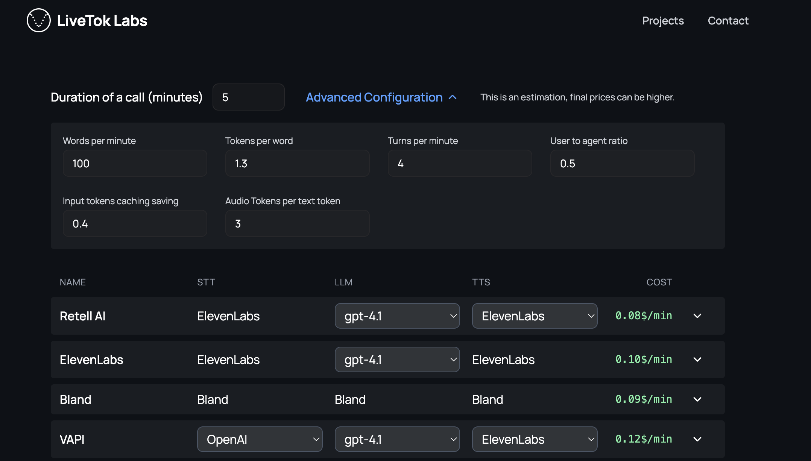

1. 2025'te Karşılıklı Konuşabilen Sesli YZ
LLM'ler iyi konuşmacılardır.
ChatGPT veya Claude ile serbest formda diyalog kurarak çok zaman geçirdiyseniz, bir LLM ile konuşmanın oldukça doğal hissettirdiğine ve genel olarak yararlı olduğuna dair sezgisel bir anlayışınız vardır.
LLM'ler ayrıca yapılandırılmamış bilgileri yapılandırılmış verilere dönüştürme konusunda da iyidir.[1]
Yeni sesli YZ ajanları, yeni bir tür kullanıcı deneyimi yaratmak için bu iki LLM yeteneğinden – karşılıklı konuşma ve yapılandırılmamış veriden yapı çıkarma – yararlanır.
[1] Burada, bazı LLM'lerin "yapılandırılmış çıktı" özelliğinin dar anlamından ziyade, bunu geniş anlamda kastediyoruz.
Sesli YZ bugün çok çeşitli iş bağlamlarında konuşlandırılmaktadır. Örneğin:
- sağlık randevularından önce hasta verilerini toplama,
- gelen satış potansiyellerini takip etme,
- giderek artan çeşitlilikte çağrı merkezi görevlerini yürütme,
- şirketler arasında planlama ve lojistiği koordine etme ve
- neredeyse her tür küçük işletme için telefonları yanıtlama.
Tüketici tarafında, karşılıklı konuşabilen sesli (ve görüntülü) YZ de sosyal uygulamalara ve oyunlara girmeye başlıyor. Ve geliştiriciler, GitHub ve sosyal medyada her gün kişisel sesli YZ projelerini ve deneylerini paylaşıyorlar.
2. Bu kılavuz hakkında
Bu kılavuz, sesli YZ'nın son durumunun bir anlık görüntüsüdür.[2]
Üretime hazır sesli ajanlar oluşturmak karmaşıktır. Birçok öğeyi sıfırdan uygulamak kolay değildir. Sesli YZ uygulamaları geliştirirseniz, bu belgede tartışılan birçok şey için muhtemelen bir çerçeveye (framework) güveneceksiniz. Ancak, hepsini sıfırdan oluşturup oluşturmasanız da parçaların birbirine nasıl uyduğunu anlamanın yararlı olduğunu düşünüyoruz.
Bu kılavuz, doğrudan Sean DuBois'nın açık kaynaklı kitabı WebRTC For the Curious'tan (Meraklısı İçin WebRTC) ilham almıştır. O kitap, dört yıl önce ilk yayınlandığından beri sayısız geliştiricinin WebRTC ile hız kazanmasına yardımcı oldu.[3]
Bu belgedeki sesli YZ kod örnekleri Pipecat açık kaynak çerçevesini kullanmaktadır. Pipecat, gerçek zamanlı YZ için satıcıdan bağımsız bir ajan katmanıdır.[4] Bu belgede Pipecat'i kullandık çünkü:
- Her gün onunla inşa ediyoruz ve bakımına yardımcı oluyoruz, bu yüzden ona aşinayız!
- Pipecat şu anda en yaygın kullanılan sesli YZ çerçevesidir; NVIDIA, Google, AWS, OpenAI'deki ekipler ve yüzlerce girişim kod tabanından yararlanmakta ve katkıda bulunmaktadır.
Bu belgede ticari ürünleri ve hizmetleri önermek yerine genel tavsiyeler vermeye çalıştık. Belirli satıcıları vurguladığımız yerlerde, bunu sesli YZ geliştiricilerinin büyük bir yüzdesi tarafından kullanıldıkları için yapıyoruz.
Hadi başlayalım …
[2] Bu kılavuzu aslında Şubat 2025'teki AI Engineering Summit için yazdık. Mayıs 2025 ortasında güncelledik.
[3] webrtcforthecurious.com — WebRTC, daha sonra WebSockets ve WebRTC bölümünde tartışacağımız üzere sesli YZ ile alakalıdır.
[4] Pipecat, 60'tan fazla YZ modeli ve hizmeti için entegrasyonlara ve sıra tespiti (turn detection) ve kesinti yönetimi gibi şeylerin son teknoloji uygulamalarına sahiptir. Pipecat ile kullanıcılarla iletişim kurmak için WebSockets, WebRTC, HTTP ve telefon altyapısını kullanan kodlar yazabilirsiniz. Pipecat; Twilio, Telnyx, LiveKit, Daily ve diğerleri dahil olmak üzere çeşitli altyapı platformları için aktarım uygulamalarını içerir. JavaScript, React, iOS, Android ve C++ için istemci tarafı Pipecat SDK'ları mevcuttur.
3. Temel karşılıklı konuşma YZ döngüsü
Bir sesli YZ ajanının temel "yapılacak işi", bir insanın ne söylediğini dinlemek, yararlı bir şekilde yanıt vermek ve sonra bu sırayı tekrarlamaktır.
Bugünkü üretim sesli ajanlarının neredeyse tamamı çok benzer bir mimariye sahiptir. Bir sesli ajan programı bulutta çalışır ve konuşmadan-konuşmaya (speech-to-speech) döngüsünü yönetir. Ajan programı birden fazla YZ modeli kullanır; bazıları ajana yerel olarak çalışır, bazılarına API'ler aracılığıyla erişilir. Ajan programı ayrıca arka uç sistemleriyle entegre olmak için LLM işlev çağrısı (function calling) veya yapılandırılmış çıktıları kullanır.
- Konuşma, bir kullanıcının cihazındaki bir mikrofon tarafından yakalanır, kodlanır ve ağ üzerinden bulutta çalışan bir sesli ajan programına gönderilir.
- Giriş konuşması, LLM için metin girişi oluşturmak üzere transkribe edilir (yazıya dökülür).
- Metin bir bağlam — bir istem (prompt) — halinde birleştirilir ve bir LLM tarafından çıkarım (inference) gerçekleştirilir. Çıkarım çıktısı genellikle ajan programı mantığı tarafından filtrelenir veya dönüştürülür.[5]
- Çıktı metni, ses çıktısı oluşturmak için bir yazıdan-sese (text-to-speech) modeline gönderilir.
- Ses çıktısı kullanıcıya geri gönderilir.
Sesli ajan programının bulutta çalıştığını ve yazıdan-sese, LLM ve konuşmadan-yazıya işlemlerinin bulutta gerçekleştiğini fark edeceksiniz. Uzun vadede, daha fazla YZ iş yükünün cihaz üzerinde (on-device) çalıştığını görmeyi bekliyoruz. Ancak bugün, üretim sesli YZ'sı çok bulut odaklıdır, bunun iki nedeni vardır:
- Sesli YZ ajanları, karmaşık iş akışlarını düşük gecikmeyle güvenilir bir şekilde yürütmek için mevcut en iyi YZ modellerini kullanmalıdır. Son kullanıcı cihazları henüz en iyi STT (Speech-to-Text), LLM ve TTS (Text-to-Speech) modellerini kabul edilebilir gecikmeyle çalıştıracak YZ hesaplama gücüne sahip değildir.
- Bugünkü ticari sesli YZ ajanlarının çoğunluğu kullanıcılarla telefon görüşmeleri yoluyla iletişim kurmaktadır. Bir telefon görüşmesi için son kullanıcı cihazı yoktur — en azından üzerinde herhangi bir kod çalıştırabileceğiniz bir cihaz yoktur!
Hadi bu ajan orkestrasyon dünyasına dalalım[6] ve şu soruları yanıtlayalım:
- Sesli YZ ajanları için en iyi hangi LLM'ler çalışır?
- Uzun süreli bir oturum sırasında konuşma bağlamını nasıl yönetirsiniz?
- Sesli ajanları mevcut arka uç sistemlerine nasıl bağlarsınız?[7]
- Sesli ajanlarınızın iyi performans gösterip göstermediğini nasıl anlarsınız?

[5] Örneğin, yaygın LLM hatalarını ve güvenlik sorunlarını tespit etmek için.
[6] Derinlemesine inceleyelim — ed.
[7] Örneğin CRM'ler, tescilli bilgi tabanları ve çağrı merkezi sistemleri.
4. Çekirdek teknolojiler ve en iyi uygulamalar
4.1. Gecikme (Latency)
Sesli ajanlar oluşturmak çoğu açıdan diğer YZ mühendisliği türlerine benzer. Metin tabanlı, çok turlu YZ ajanları oluşturma deneyiminiz varsa, bu alandaki deneyiminizin çoğu seste de yararlı olacaktır.
Büyük fark gecikmedir.
İnsanlar normal konuşmada hızlı yanıtlar bekler. 500 ms'lik bir yanıt süresi tipiktir. Uzun duraklamalar doğal hissettirmez.
Sesli YZ ajanları oluşturuyorsanız, gecikmeyi — son kullanıcı perspektifinden — doğru bir şekilde nasıl ölçeceğinizi öğrenmeye değer.
Genellikle YZ platformlarının gerçek "sesten-sese" ölçümleri olmayan gecikmelerden bahsettiğini görürsünüz. Bu genellikle kötü niyetli değildir. Sağlayıcı tarafında, gecikmeyi ölçmenin kolay yolu çıkarım süresini (inference time) ölçmektir. Bu nedenle sağlayıcılar gecikmeyi bu şekilde düşünmeye alışkındır. Ancak, bu sunucu tarafı görünümü; ses işleme, cümle sonlandırma gecikmesi, ağ aktarımı ve işletim sistemi ek yükünü hesaba katmaz.
Sesten-sese gecikmeyi manuel olarak ölçmek kolaydır.
Basitçe konuşmayı kaydedin, kaydı bir ses düzenleyicisine yükleyin, ses dalga formuna bakın ve kullanıcının konuşmasının bitiminden LLM'in konuşmasının başlangıcına kadar olan süreyi ölçün.
Üretim amaçlı kullanım için karşılıklı konuşma ses uygulamaları oluşturuyorsanız, gecikme rakamlarınızı ara sıra bu şekilde kontrol etmekte fayda vardır. Bu testleri yaparken simüle edilmiş ağ paketi kaybı ve titreme (jitter) eklerseniz ekstra puan kazanırsınız!
Gerçek sesten-sese gecikmeyi programatik olarak ölçmek zordur. Gecikmenin bir kısmı işletim sisteminin derinliklerinde gerçekleşir. Bu nedenle çoğu gözlemlenebilirlik aracı yalnızca ilk-(ses)-baytına-kadar-olan-süreyi (time-to-first-byte) ölçer. Bu, toplam sesten-sese gecikme için makul bir vekildir, ancak yine de cümle sonlandırma varyasyonu ve ağ gidiş-dönüş süresi gibi ölçmediğiniz şeylerin, bunları takip etmenin bir yolu yoksa sorunlu hale gelebileceğini unutmayın.
Karşılıklı konuşma YZ uygulamaları oluşturuyorsanız, 800 ms sesten-sese gecikme hedeflemek için iyi bir hedeftir. İşte bir kullanıcının mikrofonundan buluta ve geriye doğru bir sesten-sese gidiş-dönüş dökümü. Bu rakamlar oldukça tipiktir ve toplam yaklaşık 1 saniyedir. 800 ms zorlu olsa da, günümüz LLM'leri ile sürekli olarak elde edilmesi imkansız değildir!
| Aşama | Süre (ms) |
|---|---|
| macOS mikrofon girişi | 40 |
| opus kodlama | 21 |
| ağ yığınları ve transit | 10 |
| paket işleme | 2 |
| jitter (titreme) tamponu | 40 |
| opus kod çözme | 1 |
| transkripsiyon ve sonlandırma | 300 |
| llm ttfb (ilk bayta kadar geçen süre) | 350 |
| cümle birleştirme | 20 |
| tts ttfb | 120 |
| opus kodlama | 21 |
| paket işleme | 2 |
| ağ yığınları ve transit | 10 |
| jitter (titreme) tamponu | 40 |
| opus kod çözme | 1 |
| macOS hoparlör çıkışı | 15 |
| Toplam ms | 993 |
Bir sesten-sese konuşma gidiş-dönüşü — gecikme dökümü.
Tüm modelleri aynı GPU özellikli kümede barındırarak ve tüm modelleri verim (throughput) yerine gecikme için optimize ederek 500 ms sesten-sese gecikmeye ulaşan Pipecat ajanları gösterdik. Bu yaklaşım bugün yaygın olarak kullanılmamaktadır. Modelleri barındırmak pahalıdır. Ve açık ağırlıklı LLM'ler, GPT-4o veya Gemini gibi en iyi tescilli modellerden daha az sıklıkla sesli YZ için kullanılır. Sesli ajanlar için LLM'lerin tartışıldığı bir sonraki bölüme bakın.
Gecikme, ses kullanım durumları için çok önemli olduğundan, bu kılavuz boyunca gecikme sık sık gündeme gelecektir.

4.2. Ses kullanım durumları için LLM'ler
GPT-4'ün Mart 2023'te piyasaya sürülmesi, sesli YZ'nın mevcut çağını başlattı. GPT-4, hem esnek, çok turlu bir sohbeti sürdürebilen hem de yararlı bir iş yapacak kadar hassas bir şekilde yönlendirilebilen ilk LLM idi. Bugün, GPT-4'ün halefi – GPT-4o – karşılıklı konuşabilen sesli YZ için hala baskın modeldir.
Sesli YZ için kritik olan konularda artık orijinal GPT-4 kadar iyi veya ondan daha iyi olan birkaç başka model daha var:
- Etkileşimli sesli konuşma için yeterince düşük gecikme.
- İyi talimat takibi.[8]
- Güvenilir işlev çağrısı (function calling).[9]
- Düşük halüsinasyon oranları ve diğer uygunsuz yanıt türleri.
- Kişilik ve ton.
- Maliyet.
[8] Modeli belirli şeyleri yapması için yönlendirmek ne kadar kolay?
[9] Sesli YZ ajanları, işlev çağrısına büyük ölçüde güvenir.
Ancak bugünün GPT-4o'su da orijinal GPT-4'ten daha iyidir! Özellikle talimat takibi, işlev çağrısı ve azaltılmış halüsinasyon oranlarında.
GPT-4o'nun en büyük rakibi Google'ın Gemini 2.0 Flash modelidir. Gemini 2.0 Flash hızlıdır, talimat takibi ve işlev çağrısında GPT-4o ile başa baştır ve fiyatı agresiftir.
Sesli YZ kullanım durumları, genellikle mevcut en iyi modelleri kullanmanın mantıklı olacağı kadar talepkardır. Bir noktada bu değişecek ve son teknoloji olmayan modeller, sesli YZ kullanım durumlarında geniş çapta benimsenmek için yeterince iyi olacaktır. Bu henüz doğru değil.
4.2.1 LLM Gecikmesi
Claude Sonnet sesli YZ için mükemmel bir seçim olurdu, ancak çıkarım gecikmesi (ilk jetona kadar geçen süre) Anthropic'in önceliği olmamıştır. Claude Sonnet medyan gecikmesi tipik olarak GPT-4o ve Gemini Flash'ın gecikmesinin iki katıdır ve ayrıca çok daha büyük bir P95 aralığına sahiptir.
| Model | Medyan TTFT (ms) | P95 TTFT (ms) |
|---|---|---|
| GPT-4o | 460 | 580 |
| GPT-4o mini | 290 | 420 |
| GPT-4.1 | 450 | 670 |
| Gemini 2.0 Flash | 380 | 450 |
| Llama 4 Maverick (Groq) | 290 | 360 |
| Claude Sonnet 3.7 | 1,410 | 2,140 |
OpenAI, Anthropic ve Google API'leri için ilk jetona kadar geçen süre (TTFT) metrikleri - Mayıs 2025
Kabaca bir kural: 500 ms veya daha az LLM ilk-jetona-kadar-süre, çoğu sesli YZ kullanım durumu için yeterince iyidir. GPT-4o TTFT tipik olarak 400-500 ms'dir. Gemini Flash da benzerdir.
4.2.2 Maliyet karşılaştırması
Çıkarım maliyeti düzenli ve hızlı bir şekilde düşüyor. Bu nedenle, genel olarak, LLM maliyeti hangi LLM'nin kullanılacağını seçmede en az önemli faktör olmuştur. Gemini 2.0 Flash'ın yeni duyurulan fiyatlandırması, GPT-4o'ya kıyasla 10 kat maliyet düşüşü sunuyor. Bunun sesli YZ manzarası üzerinde ne gibi bir etkisi olacağını göreceğiz.
| Model | 3 dakikalık konuşma | 10 dakikalık konuşma | 30 dakikalık konuşma |
|---|---|---|---|
| GPT-4o | $0.009 | $0.08 | $0.75 |
| Gemini 2.0 Flash | $0.0004 | $0.004 | $0.03 |
Çok turlu konuşmalar için oturum maliyetleri, süre ile birlikte süper doğrusal (super-linear) olarak artar. 30 dakikalık bir oturum, 3 dakikalık bir oturumdan kabaca 100 kat daha pahalıdır. Önbelleğe alma (caching), bağlam özetleme ve diğer tekniklerle uzun oturumların maliyetini azaltabilirsiniz.
Maliyetin oturum uzunluğunun bir fonksiyonu olarak süper doğrusal bir şekilde arttığını unutmayın. Bir oturum sırasında bağlamı kırpmaz veya özetlemezseniz, maliyet uzun oturumlar için bir sorun haline gelir. Bu özellikle konuşmadan-konuşmaya modeller için geçerlidir (bkz. aşağısı).
Bağlam büyümesinin matematiği, sesli bir konuşma için dakika başına maliyeti kesin olarak belirlemeyi zorlaştırır. Ek olarak, API sağlayıcıları giderek daha fazla jeton önbelleğe alma (token caching) sunuyor, bu da maliyeti dengeleyebilir (ve gecikmeyi azaltabilir) ancak farklı kullanım durumları için maliyetlerin ne olacağını tahmin etmenin karmaşıklığını artırır.
OpenAI'nin OpenAI Realtime API için otomatik jeton önbelleğe alma özelliği özellikle güzeldir. Google kısa süre önce tüm sürüm 2.5 modelleri için örtük önbelleğe alma (implicit caching) adında benzer bir özellik başlattı.
4.2.3 Açık kaynak / açık ağırlıklar
Meta'nın Llama 3.3 ve 4.0 açık ağırlıklı modelleri, kriterlerde (benchmarks) orijinal GPT-4'ten daha iyi performans gösteriyor. Bugün ticari kullanım durumları için genel olarak GPT-4o ve Gemini'den daha iyi değiller. Ancak, bunlar üzerine inşa edebilme ve bunları kendi altyapınızda çalıştırabilme yeteneği önemlidir.[11]
Birçok sağlayıcı Llama çıkarım uç noktaları sunar ve sunucusuz GPU platformları, kendi Llama'nızı dağıtmak için bir dizi seçenek sunar. Meta kısa süre önce yeni birinci taraf çıkarım API'lerini duyurdu ve açık ağırlıklı Llama modellerinin şirketin önemli bir stratejik odağı olduğunu güçlü bir şekilde işaret etti.
Genişletilmiş Llama ailesindeki ilginç ve yetenekli modellerden biri Ultravox'tur. Ultravox, açık kaynaklı, yerel sesli bir LLM'dir. Ultravox'un arkasındaki şirket ayrıca kurumsal düzeyde, barındırılan konuşmadan-konuşmaya API'ler sunar. Ultravox, Llama 3.3'ü ses alanına genişletmek ve temel modelin sesli YZ kullanım durumları için talimat takibi ve işlev çağrısı performansını iyileştirmek üzere bir dizi teknikten yararlanır. Ultravox, hem açık kaynaklı bir YZ ekosisteminin faydalarının hem de yerel ses modellerinin zorlayıcı potansiyelinin bir örneğidir.
2025'te açık kaynak / açık ağırlıklı modellerde çok fazla ilerleme görüyoruz. Llama 4 yepyeni ve topluluk hala çok turlu, karşılıklı konuşma YZ kullanım durumlarındaki pratik performansını değerlendiriyor. Alibaba'nın yeni Qwen 3 modelleri mükemmel orta ölçekli modellerdir ve erken kriterlerde Llama 4 ile eşit şartlarda rekabet etmektedir. Ek olarak, DeepSeek, Google (Gemma) ve Microsoft'tan (Phi) gelecek açık ağırlıklı modellerin sesli YZ kullanım durumları için iyi seçenekler olacağı muhtemel görünmektedir.
[11] Kullanım durumunuz için bir LLM'e ince ayar (fine-tune) yapmayı planlıyorsanız, Llama 3.3 70B çok iyi bir başlangıç noktasıdır. İnce ayar hakkında daha fazla bilgi aşağıdadır.
4.2.4 Peki ya konuşmadan-konuşmaya modelleri?
Konuşmadan-konuşmaya (speech-to-speech) modelleri heyecan verici, nispeten yeni bir gelişmedir. Bir konuşmadan-konuşmaya LLM, metin yerine ses ile yönlendirilebilir ve doğrudan ses çıktısı üretebilir. Bu, sesli ajan orkestrasyon döngüsünün konuşmadan-yazıya ve yazıdan-sese kısımlarını ortadan kaldırır.
Konuşmadan-konuşmaya modellerinin potansiyel faydaları şunlardır:
- Daha düşük gecikme.
- İnsan konuşmasının nüanslarını anlama yeteneğinin artması.
- Daha doğal ses çıktısı.
OpenAI ve Google, konuşmadan-konuşmaya API'leri yayınladı. Büyük modelleri eğiten ve sesli YZ uygulamaları oluşturan çoğu kişi, konuşmadan-konuşmaya modellerinin sesli YZ'nın geleceği olduğuna inanıyor.
Ancak, mevcut konuşmadan-konuşmaya modelleri ve API'leri henüz çoğu üretim sesli YZ kullanım durumu için yeterince iyi değildir.
Bugünün en iyi konuşmadan-konuşmaya modelleri kesinlikle bugünün en iyi yazıdan-sese modellerinden daha doğal ses çıkarıyor. OpenAI'nin gpt4o-audio-preview [12] modeli gerçekten sesli YZ geleceğinin bir önizlemesi gibi ses çıkarıyor.
Ancak konuşmadan-konuşmaya modelleri henüz metin modu LLM'leri kadar olgun ve güvenilir değil.
- Teoride daha düşük gecikme mümkündür, ancak ses metinden daha fazla jeton kullanır. Daha büyük jeton bağlamlarının LLM tarafından işlenmesi daha yavaştır. Pratikte, bugün ses modelleri genellikle uzun çok turlu konuşmalar için metin modellerinden daha yavaştır.[13]
- Daha iyi anlama, bu modellerin gerçek bir faydası gibi görünüyor. Bu, özellikle Gemini 2.0 Flash ses girişi için belirgindir. Metin modu GPT-4o'dan daha küçük ve biraz daha az yetenekli bir model olan gpt-4o-audio-preview için durum bugün biraz daha az nettir.
- Daha iyi doğal ses çıktısı bugün açıkça algılanabilir. Ancak ses LLM'lerinin ses modunda, metin modunda o kadar sık olmayan bazı garip çıktı kalıpları vardır: kelime tekrarı, bazen "tekinsiz vadiye" (uncanny valley) düşen söylem işaretleri ve bazen cümleleri tamamlayamama.
[13] Ses modelleri için bu gecikme sorunu; önbelleğe alma, akıllı API tasarımı ve modellerin kendilerinin mimari evriminin bir kombinasyonu ile açıkça düzeltilebilir.
Bunların en büyüğü, çok turlu ses için gereken daha büyük bağlam boyutudur. Daireyi karelemek ve bağlam boyutu dezavantajları olmadan yerel sesin faydalarını elde etmek için bir yaklaşım, her konuşma sırasını metin ve sesin bir karışımı olarak işlemektir. En son kullanıcı mesajı için sesi kullanın; konuşma geçmişinin geri kalanı için metni kullanın.
OpenAI'nin beta konuşmadan-konuşmaya teklifi — OpenAI Realtime API — hızlıdır ve ses kalitesi harikadır. Ancak bu API'nin arkasındaki model, tam GPT-4o yerine daha küçük gpt-4o-audio-preview'dır. Bu nedenle talimat takibi ve işlev çağrısı o kadar iyi değildir. Realtime API kullanarak konuşma bağlamını yönetmek de zordur ve API'nin birkaç yeni ürün pürüzü vardır.[14]
Google Multimodal Live API, gelişiminin başlarında olan bir başka umut verici konuşmadan-konuşmaya hizmetidir. Bu API, Gemini modellerinin yakın geleceğine bir bakış sunar: uzun bağlam pencereleri, mükemmel görüntü yetenekleri, hızlı çıkarım, güçlü ses anlayışı, kod yürütme ve arama tabanlama (search grounding). OpenAI Realtime API gibi, Multimodal Live API de henüz çoğu üretim sesli YZ uygulaması için doğru seçim değildir.
Konuşmadan-konuşmaya API'lerinin nispeten pahalı olduğunu unutmayın. OpenAI'nin çok güzel otomatik jeton önbelleğe alma özelliği hesaba katılarak maliyetin oturum uzunluğuyla nasıl ölçeklendiğini gösteren OpenAI Realtime API için bir hesap makinesi oluşturduk.
2025'te konuşmadan-konuşmaya cephesinde çok fazla ilerleme görmeyi bekliyoruz. Ancak üretim sesli YZ uygulamalarının çok modelli yaklaşımdan konuşmadan-konuşmaya API'lerini kullanmaya ne kadar hızlı geçeceği hala açık bir sorudur.
[14] Realtime API hakkında ayrıntılı notlara bakın

OpenAI Realtime API maliyet hesaplayıcısı
4.3. Konuşmadan yazıya (Speech-to-text)
Konuşmadan-yazıya, sesli YZ için "giriş" aşamasıdır. Konuşmadan-yazıya, yaygın olarak transkripsiyon veya ASR (otomatik konuşma tanıma) olarak da adlandırılır.
Sesli YZ kullanım durumları için çok düşük transkripsiyon gecikmesine ve çok düşük kelime hata oranına (WER) ihtiyacımız vardır. Ne yazık ki, bir konuşma modelini düşük gecikme için optimize etmek doğruluk üzerinde olumsuz bir etkiye sahiptir.
Bugün düşük gecikme için mimari edilmemiş birkaç çok iyi transkripsiyon modeli bulunmaktadır. Whisper, birçok ürün ve hizmette kullanılan açık kaynaklı bir modeldir. Çok iyidir, ancak genellikle 500 ms veya daha fazla ilk-jetona-kadar-süreye sahiptir, bu nedenle karşılıklı konuşma sesli YZ kullanım durumları için nadiren kullanılır.
4.3.1 Deepgram ve Gladia
Bugün çoğu üretim sesli YZ ajanı konuşmadan-yazıya için Deepgram veya Gladia kullanmaktadır. Deepgram, düşük gecikme, düşük kelime hata oranı ve düşük maliyetin çok iyi bir kombinasyonunu sunma konusunda uzun bir geçmişe sahip ticari bir konuşmadan-yazıya YZ laboratuvarı ve API platformudur. Gladia, özellikle çok dilli destekte güçlü bir yanı olan (2022'de kurulan) alana yeni giren bir oyuncudur.
Deepgram'ın modelleri self-servis API'ler olarak veya müşterilerin kendi sistemlerinde çalıştırabilecekleri Docker konteynerleri olarak mevcuttur. Çoğu insan Deepgram konuşmadan-yazıya özelliğini API aracılığıyla kullanarak başlar. ABD'deki kullanıcılar için ilk jetona kadar geçen süre (TTFT) tipik olarak 150 ms'dir.
Ölçeklenebilir bir GPU kümesini yönetmek üstlenilmesi gereken önemli bir devamlı devops işidir, bu nedenle bir API'den modelleri kendi altyapınızda barındırmaya geçmek, iyi bir neden olmadan yapmanız gereken bir şey değildir. İyi nedenler şunları içerir:
- Ses/transkripsiyon verilerini gizli tutmak. Deepgram, BAA'lar ve veri işleme anlaşmaları sunar, ancak bazı müşteriler ses ve transkripsiyon verilerinin tam kontrolünü isteyecektir. ABD dışındaki müşterilerin verileri kendi ülkelerinde veya bölgelerinde tutma konusunda yasal bir zorunluluğu olabilir. (Varsayılan olarak Deepgram'ın hizmet şartlarının, API'leri aracılığıyla onlara gönderdiğiniz tüm veriler üzerinde eğitim yapmalarına izin verdiğini unutmayın. Kurumsal planlarda bunu devre dışı bırakabilirsiniz.)
- Gecikmeyi azaltmak. Deepgram'ın ABD dışında çıkarım sunucuları yoktur. Avrupa'dan Deepgram'ın TTFT'si ~250 ms'dir; Hindistan'dan ~350 ms'dir.
Deepgram, kullanım durumunuz nispeten alışılmadık kelime dağarcıkları, konuşma stilleri veya aksanlar içeriyorsa kelime hata oranlarını düşürmeye yardımcı olabilecek ince ayar hizmetleri sunar.
Gladia, İngilizce konuşulmayan dünya dışındaki yeni sesli YZ projeleri için en sık gördüğümüz konuşmadan-yazıya sağlayıcısıdır. Gladia'nın merkezi Fransa'dadır, hem ABD'de hem de Avrupa'da çıkarım sunucularına sahiptir ve 100'den fazla dili destekler.
Gladia, barındırılan API'ler ve modellerini kendi altyapınızda çalıştırma seçenekleri sunar. Gladia'nın API'leri, Avrupa veri yerleşimi gerektiren uygulamalarda kullanılabilir.
4.3.2 İstem (Prompting) LLM'e yardımcı olabilir.
Transkripsiyon hatalarının büyük bir yüzdesi, transkripsiyon modelinin gerçek zamanlı bir akışta sahip olduğu çok az miktardaki bağlamdan kaynaklanır.
Günümüzün LLM'leri transkripsiyon hatalarını aşacak kadar akıllıdır. LLM çıkarım yaparken tam konuşma bağlamına erişebilir. Böylece LLM'e girdinin kullanıcı konuşmasının bir transkripsiyonu olduğunu ve buna göre akıl yürütmesi gerektiğini söyleyebilirsiniz.
You are a helpful, concise, and reliable voice assistant. Your primary goal is to understand the user's spoken requests, even if the speech-to-text transcription contains errors. Your responses will be converted to speech using a text-to-speech system. Therefore, your output must be plain, unformatted text.
When you receive a transcribed user request:
1. Silently correct for likely transcription errors. Focus on the intended meaning, not the literal text. If a word sounds like another word in the given context, infer and correct. For example, if the transcription says "buy milk two tomorrow" interpret this as "buy milk tomorrow".
2. Provide short, direct answers unless the user explicitly asks for a more detailed response. For example, if the user says "what time is it?" you should respond with "It is 2:38 AM". If the user asks "Tell me a joke", you should provide a short joke.
3. Always prioritize clarity and accuracy. Respond in plain text, without any formatting, bullet points, or extra conversational filler.
4. If you are asked a question that is time dependent, use the current date, which is February 3, 2025, to provide the most up to date information.
5. If you do not understand the user request, respond with "I'm sorry, I didn't understand that."
Your output will be directly converted to speech, so your response should be natural-sounding and appropriate for a spoken conversation.
Bir sesli YZ ajanı için örnek istem dili.
4.3.3 Diğer konuşmadan yazıya seçenekleri
2025'te konuşmadan-yazıya alanında birçok yeni gelişme görmeyi bekliyoruz. Nisan 2025 başı itibariyle takip ettiğimiz bazı yeni gelişmeler:
- OpenAI, iki yeni konuşmadan-yazıya modeli olan gpt-4o-transcribe ve gpt-4o-mini-transcribe'ı henüz yayınladı.
- Diğer iki saygın konuşma teknolojisi şirketi Speechmatics ve AssemblyAI, karşılıklı konuşma ses kullanım durumlarına daha fazla odaklanmaya başladı, akış API'leri ve daha hızlı TTFT'lere sahip modeller gönderiyorlar.
- NVIDIA, kriterlerde son derece iyi performans gösteren açık kaynaklı konuşma modelleri gönderiyor.
- Çıkarım şirketi Groq'un Whisper Large v3 Turbo'nun barındırılan sürümü artık 300 ms'nin altında bir medyan TTFT'ye sahip, bu da onu karşılıklı konuşma ses uygulamaları için bir seçenek aralığına sokuyor. Bu, bu gecikmeye ulaştığını gördüğümüz ilk Whisper API hizmetidir.
Tüm büyük bulut hizmetlerinin konuşmadan-yazıya API'leri vardır. Hiçbiri bugün, düşük gecikmeli sesli YZ kullanım durumları için Deepgram veya Gladia kadar iyi değildir.
Ancak aşağıdaki durumlarda Azure AI Speech, Amazon Transcribe veya Google Speech-to-Text kullanmak isteyebilirsiniz:
- Bu bulut sağlayıcılarından biriyle zaten büyük bir taahhütlü harcamanız veya veri işleme anlaşmanız varsa.
- Bu bulut sağlayıcılarından birinde harcayacak çok fazla başlangıç krediniz varsa!
4.3.4 Google Gemini ile transkripsiyon
Gemini 2.0 Flash'ın düşük maliyetli, yerel ses modeli olarak güçlü yönlerinden yararlanmanın bir yolu, hem konuşma üretimi hem de transkripsiyon için Gemini 2.0 kullanmaktır.
Bunu yapmak için iki paralel çıkarım işlemi çalıştırmamız gerekir.
- Bir çıkarım işlemi konuşma yanıtını üretir.
- Diğer çıkarım işlemi kullanıcının konuşmasını transkribe eder.
- Her ses girişi yalnızca bir sıra için kullanılır. Tam konuşma bağlamı her zaman en son kullanıcı konuşmasının sesi, artı önceki tüm giriş ve çıktıların metin transkripsiyonudur.
- Bu size her iki dünyanın da en iyisini sunar: mevcut kullanıcı ifadesi için yerel ses anlayışı; tüm bağlam için azaltılmış jeton sayısı.[15]
[15] Sesi metinle değiştirmek jeton sayısını yaklaşık 10 kat azaltır. On dakikalık bir konuşma için bu, işlenen toplam jetonları – ve dolayısıyla giriş jetonlarının maliyetini – yaklaşık 100 kat azaltır. (Çünkü konuşma geçmişi her turda katlanır.)
İşte bu paralel çıkarım süreçlerini bir Pipecat işlem hattı olarak uygulamak için kod.
pipeline = Pipeline(
[
transport.input(),
audio_collector,
context_aggregator.user(),
ParallelPipeline(
[ # transcribe
input_transcription_context_filter,
input_transcription_llm,
transcription_frames_emitter,
],
[ # conversation inference
conversation_llm,
],
),
tts,
transport.output(),
context_aggregator.assistant(),
context_text_audio_fixup,
]
)
Mantık şöyledir.
- Konuşma LLM'i, konuşma geçmişini metin olarak, ayrıca her yeni kullanıcı konuşma sırasını yerel ses olarak alır ve bir konuşma yanıtı çıktılar.
- Giriş transkripsiyon LLM'i aynı girdiyi alır, ancak en son kullanıcı konuşmasının tam bir transkripsiyonunu çıktılar.
- Her konuşma sırasının sonunda, kullanıcı ses bağlamı girişi o sesin transkripsiyonu ile değiştirilir.
Gemini'nin jeton başına maliyetleri o kadar düşüktür ki bu yaklaşım aslında transkripsiyon için Deepgram kullanmaktan daha ucuzdur.
Burada Gemini 2.0 Flash'ı tam bir konuşmadan-konuşmaya model olarak kullanmadığımızı, ancak onun yerel ses anlama yeteneklerini kullandığımızı anlamak önemlidir. Modeli iki farklı "modda", konuşma ve transkripsiyon modunda çalışacak şekilde yönlendiriyoruz.
Bir LLM'i bu şekilde kullanmak, SOTA LLM mimarilerinin ve yeteneklerinin gücünü gösterir. Bu yaklaşım deneysel olacak kadar yenidir, ancak erken testler diğer tüm güncel tekniklerden hem daha iyi konuşma anlayışı hem de daha doğru transkripsiyon sağlayabileceğini göstermektedir. Ancak dezavantajları vardır. Transkripsiyon gecikmesi, uzmanlaşmış bir konuşmadan-yazıya modeli kullanmak kadar iyi değildir. İki çıkarım sürecini çalıştırmanın ve bağlam öğelerini değiştirmenin karmaşıklığı büyüktür. Genel amaçlı bir LLM, uzmanlaşmış bir transkripsiyon modelinin savunmasız olmadığı istem enjeksiyonuna (prompt injection) ve bağlam izleme hatalarına karşı savunmasız olacaktır.
İşte transkripsiyon için bir sistem talimatı (bir istem).
You are an audio transcriber. You are receiving audio from a user. Your job is to transcribe the input audio to text exactly as it was said by the user.
You will receive the full conversation history before the audio input, to help with context. Use the full history only to help improve the accuracy of your transcription.
Rules:
- Respond with an exact transcription of the audio input.
- Do not include any text other than the transcription.
- Do not explain or add to your response.
- Transcribe the audio input simply and precisely.
- If the audio is not clear, emit the special string "".
- No response other than exact transcription, or "", is allowed.
4.4. Yazıdan sese (Text-to-speech)
Yazıdan-sese, sesten-sese işleme döngüsünün çıktı aşamasıdır.
Sesli YZ geliştiricileri şunlara dayanarak bir ses modeli/hizmeti seçer:
- Seslerin ne kadar doğal olduğu (genel kalite)[16]
- Gecikme[17]
- Maliyet
- Dil desteği
- Kelime düzeyinde zaman damgası desteği
- Sesleri, aksanları ve telaffuzları özelleştirme yeteneği
[16] Telaffuz, tonlama, hız, vurgu, ritim, duygusal değer.
[17] İlk ses baytına kadar geçen süre.
Ses seçenekleri 2024'te belirgin şekilde genişledi. Sahneye yeni girişimler çıktı. Sınıfının en iyisi ses kalitesi çok yükseldi. Ve her sağlayıcı gecikmeyi iyileştirdi.
Konuşmadan-yazıya da olduğu gibi, tüm büyük bulut sağlayıcılarının yazıdan-sese ürünleri vardır.[18] Ancak çoğu sesli YZ geliştiricisi bunları kullanmıyor çünkü girişimlerden gelen modeller şu anda daha iyi.
[18] Azure AI Speech, Amazon Polly ve Google Cloud Text-to-Speech.
Gerçek zamanlı karşılıklı konuşma ses modelleri için en fazla ilgi gören laboratuvarlar şunlardır (alfabetik sırayla):
- Cartesia – Hem yüksek kalite hem de düşük gecikme elde etmek için yenilikçi bir durum-uzay model mimarisi kullanır.
- Deepgram – Gecikmeye ve düşük maliyete öncelik verir.
- ElevenLabs – Duygusal ve bağlamsal gerçekçiliği vurgular.
- Rime – Yalnızca karşılıklı konuşma konuşması üzerine eğitilmiş özelleştirilebilir TTS modelleri sunar.
Dört şirketin de güçlü modelleri, mühendislik ekipleri ve kararlı ve performanslı API'leri vardır. Cartesia, Deepgram ve Rime modelleri kendi altyapınızda dağıtılabilir.
| Dakika başı maliyet (yaklaşık) | Medyan TTFB (ms) | P95 TTFB (ms) | ort konuşma-öncesi ms | |
|---|---|---|---|---|
| Cartesia | $0.02 | 190 | 260 | 160 |
| Deepgram | $0.008 | 150 | 320 | 260 |
| ElevenLabs Turbo v2 | $0.08 | 300 | 510 | 160 |
| ElevenLabs Flash v2 | $0.04 | 170 | 190 | 100 |
| Rime | $0.024 | 340 | 980 | 160 |
Yaklaşık dakika başı maliyet (ölçekte) ve ilk bayta kadar geçen süre metrikleri – Şubat 2025. Maliyetin taahhüt edilen hacme ve kullanılan özelliklere bağlı olduğunu unutmayın. Ortalama konuşma-öncesi milisaniye, ilk konuşma karesinden önceki ses akışındaki ortalama başlangıç sessizlik aralığıdır.
Konuşmadan-yazıya da olduğu gibi, kalitede ve İngilizce olmayan ses modelleri desteğinde geniş bir varyasyon vardır. İngilizce olmayan kullanım durumları için sesli YZ oluşturuyorsanız, muhtemelen daha kapsamlı testler yapmanız gerekecektir — memnun kaldığınız bir çözüm bulmak için daha fazla hizmeti ve daha fazla sesi test edin.
Tüm ses modelleri kelimeleri bazen yanlış telaffuz eder ve özel isimleri veya alışılmadık kelimeleri nasıl telaffuz edeceklerini her zaman bilemezler.
Bazı hizmetler telaffuzu yönlendirme yeteneği sunar. Metin çıktınızın belirli özel isimleri içereceğini önceden biliyorsanız bu yararlıdır. Ses hizmetiniz fonetik yönlendirmeyi desteklemiyorsa, LLM'nizi belirli kelimelerin "duyulduğu gibi" yazılışlarını çıktılaması için yönlendirebilirsiniz. Örneğin, NVIDIA yerine in-vidia.
Replace "NVIDIA" with "in vidia" and replace
"GPU" with "gee pee you" in your responses.
LLM metin çıktısı aracılığıyla telaffuzu yönlendirmek için örnek istem dili
Karşılıklı konuşma ses kullanım durumları için, kullanıcının ne duyduğunu takip edebilmek, doğru konuşma bağlamını korumak adına önemlidir. Bu, bir modelin sese ek olarak kelime düzeyinde zaman damgası meta verileri oluşturmasını ve zaman damgası verilerinin orijinal giriş metnine geriye doğru yeniden yapılandırılabilir olmasını gerektirir. Bu, ses modelleri için nispeten yeni bir yetenektir. Yukarıdaki tablodaki ElevenLabs Flash dışındaki tüm modeller kelime düzeyinde zaman damgalarını destekler.
{
"type": "timestamps",
"context_id": "test-01",
"status_code": 206,
"done": false,
"word_timestamps": {
"words": ["What's", "the", "capital", "of", "France?"],
"start": [0.02, 0.3, 0.48, 0.6, 0.8],
"end": [0.3, 0.36, 0.6, 0.8, 1]
}
}
Cartesia API'sinden kelime düzeyinde zaman damgaları.
Ek olarak, gerçekten sağlam bir gerçek zamanlı akış API'si yararlıdır. Karşılıklı konuşma ses uygulamaları genellikle paralel olarak birden fazla ses çıkarımını tetikler. Sesli ajan kodu, devam eden çıkarımı kesebilmeli ve her çıkarım isteğini bir çıkış akışıyla ilişkilendirebilmelidir. Ses modeli sağlayıcılarından gelen akış API'lerinin hepsi nispeten yenidir ve hala gelişmektedir. Şu anda Cartesia ve Rime, Pipecat'te en olgun akış desteğine sahiptir.
Ses modeli ilerlemesinin 2025'te devam etmesini bekliyoruz.
- Yukarıda listelenen şirketlerden birkaçı yılın ilk yarısında yeni modeller geleceğini ima etti.
- OpenAI kısa süre önce gpt-4o-mini-tts adlı yeni bir yazıdan-sese modelini piyasaya sürdü. Bu model tamamen yönlendirilebilir; bu da bir ses modeline sadece ne söyleyeceğini değil, nasıl konuşacağını söylemek için yeni olanaklar açar. gpt-4o-mini-tts'yi yönlendirmeyi openai.fm adresinde deneyebilirsiniz.
- Groq and PlayAI recently announced a partnership. Groq is known for fast inference, and PlayAI offers a low-latency voice model that supports more than 30 languages.
4.5. Ses işleme
İyi bir sesli YZ platformu veya kütüphanesi, ses yakalama ve işlemenin karmaşıklıklarını çoğunlukla gizler. Ancak karmaşık sesli ajanlar oluşturursanız, bir noktada ses işlemede hatalara ve uç durumlara toslarsınız.[19] Bu nedenle ses giriş hattına hızlı bir tur atmaya değer.
[19] … bu, yazılımdaki her şeye ve belki de hayattaki çoğu şeye genellenebilir.
4.5.1 Mikrofonlar ve otomatik kazanç kontrolü
Bugün mikrofonlar, büyük miktarda düşük seviyeli yazılıma bağlı son derece sofistike donanım cihazlarıdır. Bu genellikle harikadır — mobil cihazlara, dizüstü bilgisayarlara ve bluetooth kulaklıklara yerleştirilmiş küçük mikrofonlardan müthiş ses alırız.
Ancak bazen bu düşük seviyeli yazılım istediğimizi yapmaz. Özellikle bluetooth cihazları ses girişine birkaç yüz milisaniye gecikme ekleyebilir. Bu, bir sesli YZ geliştiricisi olarak büyük ölçüde kontrolünüz dışındadır. Ancak belirli bir kullanıcının hangi işletim sistemine ve giriş cihazına sahip olduğuna bağlı olarak gecikmenin büyük ölçüde değişebileceğinin farkında olmaya değer.

Çoğu ses yakalama hattı, giriş sinyaline bir miktar otomatik kazanç kontrolü (AGC) uygular. Yine, bu genellikle istediğiniz şeydir çünkü kullanıcının mikrofona olan uzaklığı gibi şeyleri telafi eder. Bazı otomatik kazanç kontrollerini devre dışı bırakabilirsiniz, ancak tüketici sınıfı cihazlarda genellikle tamamen devre dışı bırakamazsınız.
4.5.2 Yankı giderme (Echo cancellation)
Bir kullanıcı kulağına bir telefon tutuyorsa veya kulaklık takıyorsa, yerel mikrofon ve hoparlör arasındaki geri bildirim (feedback) hakkında endişelenmenize gerek yoktur. Ancak bir kullanıcı hoparlörle konuşuyorsa veya kulaklıksız bir dizüstü bilgisayar kullanıyorsa, iyi yankı giderme son derece önemlidir.
Yankı giderme gecikmeye karşı çok hassastır, bu nedenle yankı giderme cihaz üzerinde (bulutta değil) çalışmalıdır. Bugün, telefon yığınlarına, web tarayıcılarına ve WebRTC yerel mobil SDK'larına mükemmel yankı giderme yerleştirilmiştir.[20]
Bu nedenle, bir sesli YZ, WebRTC veya telefon SDK'sı kullanıyorsanız, neredeyse tüm gerçek dünya senaryolarında "sadece çalışmasına" güvenebileceğiniz bir yankı gidermeye sahip olmalısınız. Kendi sesli YZ yakalama hattınızı kuruyorsanız, yankı giderme mantığını nasıl entegre edeceğinizi bulmanız gerekecektir. Örneğin, WebSocket tabanlı bir React Native uygulaması oluşturuyorsanız, varsayılan olarak herhangi bir yankı gidermeye sahip olmazsınız.[21]
[20] Firefox yankı gidermenin çok iyi olmadığını unutmayın. Sesli YZ geliştiricilerinin birincil platformlar olarak Chrome ve Safari ile geliştirmelerini ve zaman kalırsa Firefox'u yalnızca ikincil bir platform olarak test etmelerini öneririz.
[21] Geçenlerde birinin React Native uygulamasının ses sorunlarını ayıklamasına yardımcı olduk. Temel neden, bir sesli YZ veya WebRTC SDK'sı kullanmadıkları için yankı gidermeyi uygulamaları gerektiğini fark etmemeleriydi.
4.5.3 Gürültü bastırma, konuşma ve müzik
Telefon ve WebRTC için ses yakalama hatları neredeyse her zaman varsayılan olarak "konuşma modu"na geçer. Konuşma müzikten çok daha fazla sıkıştırılabilir ve gürültü azaltma ve yankı giderme algoritmalarının daha dar bant sinyalleri için uygulanması daha kolaydır.
Birçok telefon platformu yalnızca 8khz sesi destekler. Bu, modern standartlara göre belirgin şekilde düşük kalitelidir. Bu sınırlamaya sahip bir sistem üzerinden yönlendirme yapıyorsanız, bu konuda yapabileceğiniz hiçbir şey yoktur. Kullanıcılarınız kaliteyi fark edebilir veya etmeyebilir — çoğu insanın telefon görüşmesi sesi için beklentileri düşüktür.
WebRTC çok yüksek kaliteli sesi destekler.[22] Varsayılan WebRTC ayarları genellikle 48khz örnekleme hızı, tek kanal, 32 kbs Opus kodlama ve orta düzeyde bir gürültü bastırma algoritmasıdır. Bu ayarlar konuşma için optimize edilmiştir. Geniş bir cihaz ve ortam yelpazesinde çalışırlar ve genellikle sesli YZ için doğru seçimdir.
Müzik bu ayarlarla iyi ses çıkarmayacaktır!
Bir WebRTC bağlantısı üzerinden müzik göndermeniz gerekiyorsa, şunları yapmak istersiniz:
- Yankı gidermeyi kapatın (kullanıcının kulaklık takması gerekecektir).
- Gürültü bastırmayı kapatın.
- İsteğe bağlı olarak stereoyu etkinleştirin.
- Opus kodlama bit hızını artırın (mono için 64 kbs, stereo için 96 kbs veya 128 kbs iyi bir hedeftir).
[22] Yüksek kaliteli ses için bazı kullanım durumları:
- Bir LLM öğretmeni ile müzik dersi.
- Arka plan sesi veya müzik içeren bir podcast kaydetme.
- Etkileşimli olarak YZ müziği üretme.
4.5.4 Kodlama (Encoding)
Kodlama, ses verilerinin bir ağ bağlantısı üzerinden gönderilmek üzere nasıl biçimlendirildiği için kullanılan genel terimdir.[23]
[23] (Veya bir dosyaya kaydetmek için.)
Gerçek zamanlı iletişim için yaygın kodlamalar şunlardır:
- 16-bit PCM formatında sıkıştırılmamış ses.
- Opus — WebRTC ve bazı telefon sistemleri.
- G.711 — geniş desteğe sahip standart bir telefon codec'i.
| Codec | Bit hızı (Bitrate) | Kalite | Kullanım Durumları |
|---|---|---|---|
| 16-bit PCM | 384 kbps (Mono 24 kHz) | Çok Yüksek (Neredeyse kayıpsız) | Ses kaydı, gömülü sistemler, basit kod çözmenin hayati olduğu ortamlar |
| Opus 32 kbps | 32 kbps | İyi (Konuşma için optimize edilmiş psikoakustik sıkıştırma) | Görüntülü aramalar, düşük bant genişlikli akış, podcasting |
| Opus 96 kbps | 96 kbps | Çok İyi'den Mükemmel'e (Psikoakustik sıkıştırma) | Akış, müzik, ses arşivleme |
| G.711 (8 kHz) | 64 kbps | Zayıf (Sınırlı bant genişliği, ses odaklı) | Eski VoIP sistemleri, telefon, faks iletimi, sesli mesajlaşma |
Sesli YZ için en sık kullanılan ses codec'leri
Opus, bu üç seçenek arasında açık ara en iyisidir. Opus, web tarayıcılarına yerleştirilmiştir, sıfırdan düşük gecikmeli bir codec olarak tasarlanmıştır ve çok verimlidir. Ayrıca geniş bir bit hızı aralığında iyi performans gösterir ve hem konuşma hem de yüksek sadakatli (high-fidelity) kullanım durumlarını destekler.
16-bit PCM "ham ses"tir. PCM ses karelerini doğrudan bir yazılım ses kanalına gönderebilirsiniz (örnekleme hızının ve veri tipinin doğru belirtildiğini varsayarak). Ancak, bu sıkıştırılmamış sesin genellikle bir İnternet bağlantısı üzerinden göndermek istediğiniz bir şey olmadığını unutmayın. 24khz PCM, 384 kbs'lik bir bit hızına sahiptir. Bu, son kullanıcı cihazlarından gelen birçok gerçek dünya bağlantısının baytları gerçek zamanlı olarak teslim etmekte zorlanacağı kadar büyük bir bit hızıdır.
4.5.5 Sunucu taraflı gürültü işleme ve konuşmacı izolasyonu
Konuşmadan-yazıya ve ses aktivitesi algılama (VAD) modelleri genellikle genel ortam gürültüsünü – sokak sesleri, havlayan köpekler, mikrofona yakın yüksek sesli fanlar, klavye tıklamaları – görmezden gelebilir. Bu nedenle, birçok insandan insana kullanım durumu için kritik olan geleneksel "gürültü bastırma" algoritmaları sesli YZ için o kadar kritik değildir.
Ancak bir tür ses işleme sesli YZ için özellikle değerlidir: birincil konuşmacı izolasyonu. Birincil konuşmacı izolasyonu arka plan konuşmasını bastırır. Bu, transkripsiyon doğruluğunu önemli ölçüde artırabilir.
Havalimanı gibi bir ortamdan bir sesli ajanla konuşmaya çalıştığınızı düşünün. Telefon mikrofonunuz muhtemelen kapı duyurularından ve yanından geçen insanlardan çok fazla arka plan konuşması alacaktır. LLM'in gördüğü metin dökümünde o arka plan konuşmasını istemezsiniz!
Veya arka planda TV veya radyo açıkken oturma odasında olan kullanıcıyı hayal edin. İnsanlar genellikle düşük sesli arka plan konuşmalarını filtrelemede oldukça iyi olduklarından, insanlar bir müşteri destek hattını aramadan önce TV veya radyolarını kapatmayı düşünmeyebilirler.
Kendi sesli YZ hattınızda kullanabileceğiniz en iyi mevcut konuşmacı izolasyonu modeli Krisp tarafından satılmaktadır. Lisanslar kurumsal kullanıcılara yöneliktir ve ucuz değildir. Ancak ölçekli ticari kullanım durumları için, sesli ajan performansındaki iyileşme maliyeti haklı çıkarır.
OpenAI kısa süre önce Realtime API'sinin bir parçası olarak yeni bir gürültü azaltma özelliği gönderdi. Referans belgeleri buradadır.
pipeline = Pipeline(
[
transport.input(),
krisp_filter,
vad_turn_detector,
stt,
context_aggregator.user(),
llm,
tts,
transport.output(),
context_aggregator.assistant(),
]
)
Bir Krisp işleme elemanı ile Pipecat işlem hattı
4.5.6 Ses aktivitesi algılama (VAD)
Ses aktivitesi algılama aşaması, hemen hemen her sesli YZ hattının bir parçasıdır. VAD, ses bölümlerini "konuşma" ve "konuşma değil" olarak sınıflandırır. VAD hakkında ayrıntılı olarak aşağıda Sıra tespiti bölümünde konuşacağız.
4.6. Ağ aktarımı
4.6.1 WebSockets ve WebRTC
Hem WebSockets hem de WebRTC, YZ hizmetleri tarafından ses akışı için kullanılır.
WebSockets, sunucudan sunucuya kullanım durumları için harikadır. Ayrıca gecikmenin birincil endişe olmadığı kullanım durumları için de iyidirler ve prototipleme ve genel hackleme için uygundurlar.
WebSockets, istemci-sunucu, gerçek zamanlı medya bağlantıları için üretimde kullanılmamalıdır.
Bir tarayıcı veya yerel mobil uygulama oluşturuyorsanız ve karşılıklı konuşma gecikmesine ulaşmak uygulamanız için önemliyse, uygulamanızdan ses gönderip almak için bir WebRTC bağlantısı kullanmalısınız.
Son kullanıcı cihazlarına ve cihazlarından gerçek zamanlı medya teslimi için WebSockets ile ilgili temel sorunlar şunlardır:
- WebSockets TCP üzerine inşa edilmiştir, bu nedenle ses akışları satır başı engellemesine (head-of-line blocking) maruz kalacaktır.
- WebRTC için kullanılan Opus ses codec'i, WebRTC'nin bant genişliği tahmini ve paket hız ayarlama (tıkanıklık kontrolü) mantığına sıkı sıkıya bağlıdır, bu da bir WebRTC ses akışını, bir WebSocket bağlantısının gecikme biriktirmesine neden olacak çok çeşitli gerçek dünya ağ davranışlarına karşı dirençli hale getirir.
- Opus ses codec'i çok iyi ileri hata düzeltmeye (forward error correction) sahiptir, bu da ses akışını nispeten yüksek miktarlarda paket kaybına karşı dirençli hale getirir. (Ancak bu, yalnızca ağ aktarımınız geç gelen paketleri bırakabiliyorsa ve satır başı engellemesi yapmıyorsa size yardımcı olur.)
- WebRTC sesi otomatik olarak zaman damgalıdır, bu nedenle hem oynatma hem de kesinti mantığı önemsizdir.
- WebRTC, ayrıntılı performans ve medya kalitesi istatistikleri için kancalar (hooks) içerir. İyi bir WebRTC platformu size ayrıntılı panolar ve analizler verecektir. Bu düzeyde gözlemlenebilirlik, WebSockets için oluşturulması çok zor ile imkansız arasında bir yerdedir.
- WebSocket yeniden bağlanma mantığını sağlam bir şekilde uygulamak oldukça zordur. Bir ping/ack çerçevesi oluşturmanız (veya WebSocket kütüphanenizin sağladığı çerçeveyi tam olarak test edip anlamanız) gerekecektir. TCP zaman aşımları ve bağlantı olayları farklı platformlarda farklı davranır.
- Son olarak, bugün iyi WebRTC uygulamaları çok iyi yankı giderme, gürültü azaltma ve otomatik kazanç kontrolü ile birlikte gelir.
WebRTC'yi iki şekilde kullanabilirsiniz.
- Buluttaki WebRTC sunucuları üzerinden yönlendirme yaparak.
- Bir istemci cihaz ile bir sesli YZ süreci arasında doğrudan bir bağlantı kurarak.
Bulut sunucuları üzerinden yönlendirme, birçok gerçek dünya kullanım durumu için daha iyi performans gösterecektir (aşağıdaki ağ yönlendirme bölümüne bakın). Bulut altyapısı ayrıca doğrudan bağlantıların kolayca veya ölçeklenebilir bir şekilde destekleyemediği bir dizi özelliği (çok katılımcılı oturumlar, telefon sistemleri ile entegrasyon, kayıt) mümkün kılar.
Ancak "sunucusuz" WebRTC, birçok sesli YZ kullanım durumu için iyi bir uyumdur. Pipecat, SmallWebRTCTransport sınıfı aracılığıyla sunucusuz WebRTC'yi destekler. Ve Hugging Face'in FastRTC gibi çerçeveleri tamamen bu ağ deseni etrafında inşa edilmiştir.

4.6.2 HTTP
HTTP, sesli YZ için de hala yararlı ve önemlidir! HTTP, İnternet üzerindeki hizmet ara bağlantısı için ortak dildir. REST API'leri HTTP'dir. Webhook'lar HTTP'dir.
Metin odaklı çıkarım HTTP üzerinden gerçekleşir, bu nedenle sesli YZ hatları genellikle karşılıklı konuşma döngüsünün LLM kısımları için HTTP API'lerini çağırır.
Sesli ajanlar, harici hizmetler ve dahili API'lerle entegre olurken de HTTP kullanır. Yararlı bir teknik, LLM işlev çağrılarını HTTP uç noktalarına vekil (proxy) olarak göndermektir. Bu, sesli YZ ajan kodunu ve devops'u işlev uygulamalarından ayırır.
Çok modlu YZ uygulamaları genellikle hem HTTP hem de WebRTC kod yollarını uygulamak isteyecektir. Hem metin modunu hem de ses modunu destekleyen bir sohbet uygulaması hayal edin. Konuşma durumunun her iki bağlantı yoluyla da erişilebilir olması gerekir, bu da hem istemci hem de sunucu tarafı kodu için sonuçlar doğurur (örneğin, Kubernetes podları ve Docker konteynerleri gibi şeylerin nasıl mimarilendirildiği).
HTTP'nin iki dezavantajı gecikme ve uzun ömürlü, iki yönlü bağlantıları uygulamanın zorluğudur.
- Şifreli bir HTTP bağlantısı kurmak birden fazla ağ gidiş-dönüşü gerektirir. 30 ms'den çok daha düşük medya bağlantı kurulum sürelerine ulaşmak oldukça zordur ve gerçekçi ilk-bayt-gönderme-süresi (time-to-send-first-byte), yoğun bir şekilde optimize edilmiş sunucular için bile 100 ms'ye yakındır.
- Uzun ömürlü, iki yönlü HTTP bağlantılarını yönetmek o kadar zordur ki genellikle sadece WebSockets kullanmak daha iyidir.
- HTTP TCP tabanlı bir protokoldür, bu nedenle WebSockets'ı etkileyen aynı satır başı engellemesi (head-of-line blocking) sorunları HTTP için de bir sorundur.
- HTTP üzerinden ham ikili veri göndermek o kadar nadirdir ki çoğu API, ikili verileri base64 kodlamayı tercih eder, bu da medya akışlarının bit hızını artırır.
Bu da bizi QUIC'e getiriyor …

Ağ iletişimi için hem HTTP hem de WebRTC kullanan bir sesli YZ ajanı.
4.6.3 QUIC ve MoQ
QUIC, HTTP'nin en son sürümü (HTTP/3) için taşıma katmanı olacak şekilde — ve diğer İnternet ölçeğindeki kullanım durumlarını da esnek bir şekilde desteklemek üzere — tasarlanmış yeni bir ağ protokolüdür.
QUIC UDP tabanlı bir protokoldür ve HTTP ile ilgili yukarıdaki sorunların tümünü ele alır. QUIC ile daha hızlı bağlantı süreleri, iki yönlü akışlar elde edersiniz ve satır başı engellemesi olmaz. Google ve Facebook, QUIC'i istikrarlı bir şekilde kullanıma sunmaktadır, bu nedenle bugünlerde HTTP isteklerinizin bazıları İnternet'i TCP paketleri yerine UDP olarak geçmektedir. [24]
[24] Uzun süredir İnternet üzerinde bir şeyler inşa ediyorsanız bu biraz 🤯. HTTP her zaman TCP tabanlı bir protokol olmuştur!
QUIC, İnternet üzerinde medya akışının geleceğinin büyük bir parçası olacaktır. Gerçek zamanlı medya akışı için QUIC tabanlı protokollere geçiş zaman alacaktır. QUIC tabanlı sesli ajanlar oluşturmanın önündeki bir engel, Safari'nin WebSockets'ın QUIC tabanlı evrimi olan WebTransport'u henüz desteklememesidir.
Media over QUIC (QUIC Üzerinden Medya) IETF çalışma grubu[25], "medyanın alımı ve dağıtımı için basit, düşük gecikmeli bir medya teslim çözümü" geliştirmeyi amaçlamaktadır. Tüm standartlarda olduğu gibi, en geniş kapsamlı önemli kullanım durumlarını mümkün olan en basit yapı taşlarıyla nasıl destekleyeceğinizi tartışmak kolay değildir. İnsanlar QUIC'i isteğe bağlı video akışı, büyük ölçekli video yayını, canlı video akışı, çok sayıda katılımcılı düşük gecikmeli oturumlar ve düşük gecikmeli 1:1 oturumlar için kullanma konusunda heyecanlıdır.
Gerçek zamanlı sesli YZ kullanım durumları, MoQ standardının gelişimini etkilemek için tam doğru zamanda büyüyor.
4.6.4 Ağ yönlendirme
Uzun mesafeli ağ bağlantıları, alttaki ağ protokolü ne olursa olsun gecikme ve gerçek zamanlı medya güvenilirliği için sorunludur.
Gerçek zamanlı medya teslimi için sunucularınızın kullanıcılarınıza mümkün olduğunca yakın olmasını istersiniz.
Örneğin, İngiltere'deki bir kullanıcıdan Kuzey Kaliforniya'daki AWS us-west-1 tarafından barındırılan bir sunucuya gidiş dönüş paket süresi (RTT) tipik olarak yaklaşık 140 milisaniye olacaktır. Buna karşılık, aynı kullanıcıdan AWS eu-west-2'ye RTT genellikle 15 milisaniye veya daha az olacaktır.

İngiltere'deki bir kullanıcıdan AWS us-west-1'e RTT, AWS eu-west-2'ye göre ~100 ms daha fazladır
Bu, 100 milisaniyeden fazla bir farktır — sesten-sese gecikme hedefiniz 1.000 milisaniye ise gecikme "bütçenizin" yüzde onu.
Uç yönlendirme (Edge routing)
Sunucuları tüm kullanıcılarınıza yakın bir şekilde dağıtamayabilirsiniz.
Dünyanın her yerindeki kullanıcılara 15 ms RTT elde etmek, en az 40 küresel veri merkezine dağıtım yapmayı gerektirir. Bu büyük bir devops işidir. Ve GPU gerektiren iş yükleri çalıştırıyorsanız veya kendileri küresel olarak dağıtılmamış hizmetlere güveniyorsanız, bu imkansız olabilir.
Işık hızını kandıramazsınız.[26] Ancak rota değişkenliğinden ve tıkanıklığından kaçınmaya çalışabilirsiniz.
[26] Kadim ağ mühendisi bilgeliği – ed.
Anahtar, genel İnternet rotalarınızı mümkün olduğunca kısa tutmaktır. Kullanıcılarınızı onlara yakın bir uç sunucuya bağlayın. Oradan özel rotaları kullanın.
Bu uç yönlendirme medyan paket RTT'sini azaltır. Özel bir omurga üzerinden İngiltere → Kuzey Kaliforniya rotası muhtemelen yaklaşık 100 milisaniye olacaktır. 100 ms (özel ağ üzerinden uzun rota) + 15 ms (genel İnternet üzerinden ilk atlama) = 115 ms. Bu özel rota medyan RTT'si, genel rota medyan RTT'sinden 25 ms daha iyidir.

İngiltere'den AWS us-west-1'e uç rotası. Genel ağ üzerindeki ilk atlama hala 15 ms'lik bir RTT'ye sahiptir. Ancak özel ağ üzerinden Kuzey Kaliforniya'ya giden uzun rotanın 100 ms'lik bir RTT'si vardır. Toplam 115 ms'lik RTT, İngiltere'den us-west-1'e giden genel rotadan 25 ms daha hızlıdır. Ayrıca önemli ölçüde daha az değişkendir (daha az paket kaybı ve daha düşük titreme).
Ancak medyan RTT iyileştirmesinden daha kritik olan, iyileştirilmiş teslim güvenilirliği ve daha düşük titremedir (jitter).[27] Özel bir rotanın P95 RTT'si, genel bir rotanın P95'inden önemli ölçüde daha düşük olacaktır.[28]
Bu, uzun mesafeli genel rotalar üzerindeki gerçek zamanlı medya bağlantılarının, özel rotaları kullanan bağlantılardan ölçülebilir şekilde daha gecikmeli olacağı anlamına gelir. Her ses paketini mümkün olduğunca çabuk teslim etmeye çalıştığımızı, ancak ses paketlerini sırayla oynatmamız gerektiğini hatırlayın. Tek bir gecikmiş paket, gecikmiş paket gelene kadar diğer alınan paketleri tutarak titreme tamponumuzu (jitter buffer) genişletmemize neden olur. (Veya çok uzun sürdüğüne karar verip boşluğu ya süslü matematikle ya da hatalı ses örnekleriyle doldurana kadar.)
[27] Jitter (titreme), bir paketin rotayı geçmesinin ne kadar sürdüğündeki değişkenliktir.
[28] P95, bir metriğin 95. yüzdelik ölçümüdür. P50 medyan ölçümdür (50. yüzdelik dilim). Kabaca konuşursak, P50'yi ortalama durum ve P95'i "tipik en kötü durum" bağlantılarına dair kaba bir fikir yakalamak olarak düşünürüz.

Titreme tamponu — daha büyük bir titreme tamponu, ses ve videoda algılanan gecikmenin doğrudan daha büyük olmasına neden olur. Titreme tamponlarını mümkün olduğunca küçük tutmak, iyi bir kullanıcı deneyimine önemli ölçüde katkıda bulunur.
İyi bir WebRTC altyapı sağlayıcısı uç yönlendirme sunacaktır. Sunucu kümelerinin nerede olduğunu size gösterebilecek ve özel rota performanslarını gösteren metrikler sağlayabilecektir.
4.7. Sıra tespiti (Turn detection)
Sıra tespiti kullanıcının konuşmayı ne zaman bitirdiğini ve LLM'in yanıt vermesini beklediğini belirlemek anlamına gelir.
Akademik literatürde, bu sorunun çeşitli yönlerine ifade tespiti, konuşma segmentasyonu ve sonlandırma (endpointing) denir. (Bu konuda akademik literatür olması, bunun basit bir sorun olmadığının bir ipucudur.)
Biz (insanlar) başka biriyle her konuştuğumuzda sıra tespiti yaparız. Ve bunu her zaman doğru yapamayız![29]
Bu nedenle sıra tespiti zor bir sorundur ve mükemmel çözümler yoktur. Ancak yaygın kullanımda olan çeşitli yaklaşımlardan bahsedelim.
[29] Özellikle sesli aramalarda, bize yardımcı olacak görsel ipuçlarına sahip olmadığımızda.
4.7.1 Ses aktivitesi algılama
Şu anda, sesli YZ ajanları için sıra tespiti yapmanın en yaygın yolu, uzun bir duraklamanın kullanıcının konuşmayı bitirdiği anlamına geldiğini varsaymaktır.
Sesli YZ ajan hatları, küçük, özelleştirilmiş bir ses aktivitesi algılama (VAD) modeli kullanarak duraklamaları tanımlar. Bir VAD modeli, ses segmentlerini konuşma veya konuşma-dışı olarak sınıflandırmak üzere eğitilmiştir. (Bu, duraklamaları yalnızca ses seviyesine göre tanımlamaya çalışmaktan çok daha sağlamdır.)
VAD'ı bir sesli YZ bağlantısının istemci tarafında veya sunucuda çalıştırabilirsiniz. İstemcide önemli bir ses işleme yapmanız gerekiyorsa, bunu kolaylaştırmak için muhtemelen istemcide VAD çalıştırmanız gerekecektir. Örneğin, belki gömülü bir cihazda uyandırma kelimelerini (wake words) tanımlıyorsunuz ve yalnızca bir ifadenin başında bir uyandırma kelimesi algılarsanız ağ üzerinden ses gönderiyorsunuz. Hey, Siri …
Genellikle, VAD'ı sesli YZ ajan işleme döngüsünün bir parçası olarak çalıştırmak biraz daha basittir. Ve kullanıcılarınız telefonla bağlanıyorsa, VAD çalıştırabileceğiniz bir istemciniz yoktur, bu yüzden bunu sunucuda yapmanız gerekir.
Sesli YZ için en sık kullanılan VAD modeli Silero VAD'dır. Bu açık kaynaklı model CPU üzerinde verimli bir şekilde çalışır, birden fazla dili destekler, hem 8khz hem de 16khz ses için iyi çalışır ve web tarayıcılarında kullanım için wasm paketleri olarak mevcuttur. Silero'yu gerçek zamanlı, mono bir ses akışında çalıştırmak normalde tipik bir sanal makine CPU çekirdeğinin 1/8'inden daha azını alır.
Bir sıra tespiti algoritmasının birkaç yapılandırma parametresi olacaktır:
- Sıra sonu için gereken duraklama uzunluğu.
- Konuşmaya başlama olayını tetiklemek için gereken konuşma segmenti uzunluğu.
- Her ses segmentini konuşma olarak sınıflandırmak için güven düzeyi.
- Konuşma segmentleri için minimum ses seviyesi.

Burada konuşmadan-yazıya işleminden hemen önce çalışacak şekilde yapılandırılmış bir ses aktivitesi algılama (VAD) işleme adımı
# Pipecat's names and default values
# for the four configurable VAD
# parameters
VAD_STOP_SECS = 0.8
VAD_START_SECS = 0.2
VAD_CONFIDENCE = 0.7
VAD_MIN_VOLUME = 0.6
Bu parametreleri ayarlamak, belirli kullanım durumları için sıra tespiti davranışını çok iyileştirebilir.
4.7.2 Bas-konuş
Sıra tespitini konuşmadaki duraklamalara dayandırmanın bariz sorunu, bazen insanların duraklaması ancak konuşmayı bitirmemiş olmasıdır.
Bireysel konuşma stilleri değişir. İnsanlar bazı konuşma türlerinde diğerlerine göre daha fazla duraklar.
Uzun bir duraklama aralığı ayarlamak tutuk konuşmalar yaratır — çok kötü bir kullanıcı deneyimi. Ancak kısa bir duraklama aralığı ile sesli ajan sık sık kullanıcının sözünü kesecektir — bu da kötü bir kullanıcı deneyimidir.
Duraklama tabanlı sıra tespitine en yaygın alternatif bas-konuş'tur. Bas-konuş, kullanıcının konuşmaya başladığında bir düğmeye basmasını veya basılı tutmasını ve konuşmayı bitirdiğinde düğmeye tekrar basmasını veya bırakmasını gerektirmek anlamına gelir. (Eski usul telsizlerin nasıl çalıştığını düşünün.)
Bas-konuş ile sıra tespiti belirsiz değildir. Ancak kullanıcı deneyimi sadece konuşmakla aynı değildir.
Telefon sesli YZ ajanları için bas-konuş mümkün değildir.
4.7.3 Bitiş noktası işaretçileri
Belirli kelimeleri sıra sonu işaretçileri olarak da kullanabilirsiniz. (CB radyolarda konuşan kamyoncuların "tamam" (over) dediğini düşünün.)
Belirli bitiş noktası işaretçilerini tanımlamanın en kolay yolu, her transkripsiyon parçasına karşı düzenli ifade eşleşmesi çalıştırmaktır. Ancak bitiş noktası kelimelerini veya ifadelerini algılamak için küçük bir dil modeli de kullanabilirsiniz.
Açık bitiş noktası işaretçileri kullanan sesli YZ uygulamaları oldukça nadirdir. Kullanıcıların bu uygulamalarla konuşmayı öğrenmesi gerekir. Ancak bu yaklaşım, uzmanlaşmış kullanım durumları için çok iyi çalışabilir.
Örneğin, geçen yıl birisinin kendisi için yan proje olarak oluşturduğu bir yazma asistanının güzel bir demosunu gördük. Sıra bitiş noktalarını belirtmek ve modlar arasında geçiş yapmak için çeşitli komut ifadeleri kullandılar.
4.7.4 Bağlam duyarlı sıra tespiti (semantik VAD ve akıllı sıra)
İnsanlar sıra tespiti yaparken çeşitli ipuçlarını kullanırlar:
- "Hımm" gibi dolgu sözcüklerinin devam eden konuşmayı işaret etmesi muhtemel olarak tanımlanması.
- Gramer yapısı.
- Telefon numaralarının belirli sayıda rakama sahip olması gibi kalıpların bilgisi.
- Bir duraklamadan önceki son kelimeyi uzatmak gibi tonlama ve telaffuz kalıpları.
Derin öğrenme modelleri kalıpları tanımlamada çok iyidir. LLM'ler çok fazla gizli gramer bilgisine sahiptir ve cümle sonlandırma yapmak üzere yönlendirilebilirler. Daha küçük, uzmanlaşmış sınıflandırma modelleri dil, tonlama ve telaffuz kalıpları üzerinde eğitilebilir.
Sesli ajanlar ticari olarak giderek daha önemli hale geldikçe, bağlam duyarlı sesli YZ sıra tespiti için yeni modeller görmeyi bekliyoruz.
İki ana yaklaşım vardır:
- Gerçek zamanlı çalışabilen küçük bir sıra tespiti modeli eğitin. Bu modeli bir VAD modeliyle birlikte veya onun yerine kullanın. Bir sıra tespiti modeli metin üzerinde kalıp eşleştirmesi yapmak üzere eğitilebilir. Metin modu sıra tespiti modeli, işleme hattında transkripsiyondan sonra satır içi (inline) çalışır ve etkili olması için genellikle belirli bir transkripsiyon modelinin çıktısı üzerinde eğitilmesi gerekir. Veya, bir sıra tespiti modeli ses üzerinde yerel olarak çalışmak üzere eğitilebilir, bu da sıra tespiti sınıflandırmasının hem dil düzeyindeki kalıpları hem de tonlama, konuşma hızı ve telaffuz kalıplarını hesaba katmasını sağlar. Yerel bir ses sıra tespiti modeli herhangi bir transkripsiyon bilgisi gerektirmez, bu nedenle performansı artırabilen transkripsiyon ile paralel olarak çalışabilir.
- Sıra tespiti yapmak için büyük bir LLM ve az örnekli (few-shot) bir istem kullanın. Büyük LLM'ler genellikle satır içi kullanmak için çok yavaştır, hattı engeller. Bunu aşmak için hattı bölebilir ve sıra tespiti ile "açgözlü" (greedy) konuşma çıkarımını paralel olarak yapabilirsiniz.
[
transport.input(),
vad,
audio_accumulater,
ParallelPipeline(
[
FunctionFilter(filter=block_user_stopped_speaking),
],
[
ParallelPipeline(
[
classifier_llm,
completeness_check,
],
[
tx_llm,
user_aggregator_buffer,
],
)
],
[
conversation_audio_context_assembler,
conversation_llm,
bot_output_gate,
],
),
tts,
transport.output(),
context_aggregator.assistant(),
],
Gemini 2.0 Flash yerel ses girişi kullanan bağlam duyarlı sıra tespiti için Pipecat işlem hattı kodu. Sıra tespiti ve açgözlü konuşma çıkarımı paralel çalışır. Çıktı, sıra tespiti çıkarımı bir ifade bitiş noktası algılayana kadar kapıda bekletilir (gated).
Sıra tespitindeki bazı yeni gelişmeler:
- Mart ayında OpenAI, Realtime API'leri için yeni bir bağlam duyarlı sıra tespiti özelliği yayınladı. Daha basit sunucu VAD (duraklama tabanlı sıra tespiti) özelliğinin aksine bu özelliğe semantik VAD adını veriyorlar. Belgeler burada.
- Tavus, artık gerçek zamanlı karşılıklı konuşma video API'lerinin bir parçası olan transformatör tabanlı bir yerel ses sıra tespiti modeli geliştirdi. Tavus ekibi, sorun alanı ve modelin nasıl çalıştığı hakkında çok güzel bir teknik genel bakış yayınladı.
- Smart Turn açık kaynak modeli, Pipecat topluluğu tarafından oluşturulan ve bakımı yapılan son teknoloji bir yerel ses sıra tespiti modelidir. Tüm eğitim verileri, eğitim kodu, çıkarım kodu ve model ağırlıkları açık kaynaktır. [30]
4.8. Müdahale/Kesinti yönetimi
Kesinti yönetimi (Interruption handling) kullanıcının sesli YZ ajanının sözünü kesmesine izin vermek anlamına gelir. Kesintiler konuşmanın normal bir parçasıdır, bu nedenle kesintileri zarif bir şekilde yönetmek önemlidir.
Kesinti yönetimini uygulamak için hattınızın her parçasının iptal edilebilir olması gerekir. Ayrıca istemcide ses çalmayı çok hızlı bir şekilde durdurabilmeniz gerekir.
Genellikle, birlikte geliştirdiğiniz çerçeve, bir kesinti tetiklendiğinde tüm işlemleri durdurma işini halleder. Ancak size ham ses karelerini gerçek zamanlıdan daha hızlı gönderen bir API'yi doğrudan kullanıyorsanız, oynatmayı manuel olarak durdurmanız ve ses tamponlarını temizlemeniz gerekecektir.
4.8.1 Hatalı kesintilerden kaçınma
Birkaç istenmeyen kesinti kaynağı dikkate değerdir.
- Konuşma olarak sınıflandırılan geçici gürültüler. İyi VAD modelleri konuşmayı "gürültü"den ayırma konusunda mükemmel bir iş çıkarır. Ancak belirli türdeki kısa, keskin, başlangıç sesleri, bir ifadenin başında göründüklerinde kendilerine eklenmiş orta düzeyde konuşma güvenine (confidence) sahip olacaktır. Öksürme ve klavye tıklamaları bu kategoriye girer. Bu kesinti kaynağını en aza indirmek için VAD başlangıç segmenti uzunluğunu ve güven düzeyini ayarlayabilirsiniz. Bunun bedeli, başlangıç segmenti uzunluğunu uzatmanın ve güven eşiğini yükseltmenin, tam ifadeler olarak algılamak istediğiniz çok kısa ifadeler için sorunlar yaratacak olmasıdır.[31]
- Yankı giderme hataları. Yankı giderme algoritmaları mükemmel değildir. Sessizlikten konuşma oynatmaya geçiş özellikle zorludur. Çok fazla sesli ajan testi yaptıysanız, botunuzun konuşmaya başladığı anda kendi sözünü kestiğini muhtemelen duymuşsunuzdur. Suçlu, yankı gidermenin ilk konuşma sesinin bir kısmının mikrofonunuza geri beslenmesine izin vermesidir. Minimum VAD başlangıç segmenti uzunluğu bu sorunu önlemeye yardımcı olur. Ses seviyesine üstel yumuşatma (exponential smoothing)[32] uygulamak da keskin ses seviyesi geçişlerini önlemeye yardımcı olur.
- Arka plan konuşması. VAD modeli, kullanıcı konuşması ile arka plan konuşması arasında ayrım yapmaz. Arka plan konuşması ses eşiğinizden daha yüksekse, arka plan konuşması bir kesintiyi tetikleyecektir. Bir konuşmacı izolasyonu ses işleme adımı, arka plan konuşmasının neden olduğu hatalı kesintileri azaltabilir. Yukarıdaki Sunucu taraflı gürültü işleme ve konuşmacı izolasyonu bölümündeki tartışmaya bakın.
4.8.2 Bir kesintiden sonra doğru bağlamı koruma
LLM'ler çıktıyı gerçek zamanlıdan daha hızlı ürettiğinden, bir kesinti meydana geldiğinde genellikle kullanıcıya gönderilmek üzere sıraya alınmış LLM çıktınız olacaktır.
Genellikle, konuşma bağlamının kullanıcının gerçekte duyduğu şeyle eşleşmesini istersiniz (hattınızın gerçek zamanlıdan daha hızlı ürettiği şeyle değil).
Muhtemelen konuşma bağlamını metin olarak da kaydediyorsunuzdur.[33]
Bu yüzden kullanıcının gerçekte hangi metni duyduğunu anlamanın bir yoluna ihtiyacınız var!
En iyi konuşmadan-yazıya hizmetleri kelime düzeyinde zaman damgası verilerini raporlayabilir. Kullanıcı tarafından duyulan sesle eşleşen asistan mesaj metnini tamponlamak ve birleştirmek için bu kelime düzeyindeki zaman damgalarını kullanın. Yukarıdaki Yazıdan sese bölümündeki kelime düzeyinde zaman damgaları tartışmasına bakın. Pipecat bunu otomatik olarak halleder.
[31] Pipecat'in standart hat yapılandırması, hem hatalı kesintileri hem de kaçırılan ifadeleri önlemeye çalışmak için VAD ve transkripsiyon olaylarını birleştirir.
[33] Standart bağlam yapısı, OpenAI tarafından geliştirilen kullanıcı / asistan mesaj listesi formatıdır.
4.9. Konuşma bağlamını yönetme
LLM'ler durumsuzdur (stateless). Bu, çok turlu bir konuşma için, her yeni yanıt oluşturduğunuzda önceki tüm kullanıcı ve ajan mesajlarını — ve diğer yapılandırma öğelerini — LLM'e geri beslemeniz gerektiği anlamına gelir.
Turn 1:
User: What's the capital of France?
LLM: The capital of France is Paris.
Turn 2:
User: What's the capital of France?
LLM: The capital of France is Paris.
User: Is the Eiffel Tower there?
LLM: Yes, the Eiffel Tower is in Paris.
Turn 3:
User: What's the capital of France?
LLM: The capital of France is Paris.
User: Is the Eiffel Tower there?
LLM: Yes, the Eiffel Tower is in Paris.
User: How tall is it?
LLM: The Eiffel Tower is about 330 meters tall.
Tüm konuşma geçmişini her turda bir LLM'e göndermek.
Her çıkarım işlemi için — her konuşma sırası için — LLM'e şunları gönderebilirsiniz:
- Sistem talimatları
- Konuşma mesajları
- LLM'in kullanması için araçlar (işlevler)
- Yapılandırma parametreleri (örneğin, sıcaklık - temperature)
4.9.1 LLM API'leri arasındaki farklar
Bu genel tasarım, bugün tüm büyük LLM'ler için aynıdır.
Ancak çeşitli sağlayıcıların API'leri arasında farklar vardır. OpenAI, Google ve Anthropic'in hepsinin farklı mesaj formatları, araç/işlev tanımlarının yapısında farklılıklar ve sistem talimatlarının nasıl belirtildiği konusunda farklılıklar vardır.
API çağrılarını OpenAI formatına çeviren üçüncü taraf API ağ geçitleri ve yazılım kütüphaneleri vardır. Bu değerlidir, çünkü farklı LLM'ler arasında geçiş yapabilmek yararlıdır. Ancak bu hizmetler her zaman farkları düzgün bir şekilde soyutlayamaz. Yeni özellikler ve her API'ye özgü özellikler her zaman desteklenmez. (Ve bazen çeviri katmanında hatalar olur.)
YZ mühendisliğinin bu nispeten erken günlerinde soyutlamak ya da soyutlamamak bir soru olarak kalmaya devam ediyor.[34]
Örneğin Pipecat, hem bağlam mesajları hem de araç tanımları için mesajları OpenAI formatına ve OpenAI formatından çevirir. Ancak bunun yapılıp yapılmayacağı ve nasıl yapılacağı önemli bir topluluk tartışması konusuydu![35]
[34] Kendime not: Claude'dan iyi bir Hamlet şakası bulmasını iste – ed.
[35] Bu gibi konularla ilgileniyorsanız, lütfen Pipecat Discord sunucusuna katılmayı ve oradaki sohbete dahil olmayı düşünün.
4.9.2 Sıralar arasında bağlamı değiştirme
Çok turlu bağlamı yönetmek zorunda olmak, bir sesli YZ ajanı geliştirmenin karmaşıklığını artırır. Öte yandan, bağlamı geriye dönük olarak değiştirmek yararlı olabilir. Her konuşma sırası için LLM'e tam olarak ne göndereceğinize karar verebilirsiniz.
LLM'ler her zaman tam konuşma bağlamına ihtiyaç duymaz. Bağlamı kısaltmak veya özetlemek gecikmeyi azaltabilir, maliyeti düşürebilir ve bir sesli YZ ajanının güvenilirliğini artırabilir. Bu konu hakkında daha fazla bilgi aşağıdaki Senaryo yazma ve talimat takibi bölümündedir.
4.10. İşlev çağrısı (Function calling)
Üretim sesli YZ ajanları büyük ölçüde LLM işlev çağrısına dayanır.
İşlev çağrısı şunlar için kullanılır:
- Erişim artırılmış üretim (RAG) için bilgi getirme.
- Mevcut arka uç sistemleri ve API'lerle etkileşim kurma.
- Telefon teknolojisi yığınlarıyla entegrasyon — çağrı transferleri, kuyruğa alma, DTMF tonları gönderme.
- Senaryo takibi – iş akışı durum geçişlerini uygulayan işlev çağrıları.
4.10.1 Sesli YZ bağlamında işlev çağrısı güvenilirliği
Sesli YZ ajanları giderek daha karmaşık kullanım durumları için dağıtıldıkça, güvenilir işlev çağrısı giderek daha önemli hale geldi.
SOTA LLM'ler işlev çağrısında istikrarlı bir şekilde daha iyiye gidiyor, ancak sesli YZ kullanım durumları LLM işlev çağrısı yeteneklerinin sınırlarını zorlama eğilimindedir.
Sesli YZ ajanları şunları yapma eğilimindedir:
- Çok turlu konuşmalarda işlevleri kullanma. Çok turlu konuşmalarda, kullanıcı ve asistan mesajları her turda eklendikçe istemler (prompts) giderek daha karmaşık hale gelir. Bu istem karmaşıklığı LLM işlev çağrısı yeteneklerini düşürür.
- Birden fazla işlev tanımlama. Bir sesli YZ iş akışı için beş veya daha fazla işleve ihtiyaç duymak yaygındır.
- Bir oturum sırasında işlevleri birkaç kez çağırma.
Tüm büyük YZ model sürümlerini yoğun bir şekilde test ediyoruz ve bu modelleri eğiten insanlarla sık sık konuşuyoruz. Yukarıdaki özelliklerin hepsinin, mevcut nesil LLM'leri eğitmek için kullanılan verilere göre biraz dağılım dışı (out of distribution) olduğu açıktır.
Bu, mevcut nesil LLM'lerin genel işlev çağrısı kriterlerinde iyi performans gösterseler bile sesli YZ kullanım durumlarında zorlandıkları anlamına gelir. Farklı LLM'ler ve aynı modelin farklı güncellemeleri, işlev çağrısında farklı şekilde iyidir ve farklı koşullarda farklı işlev çağrısı türlerinde farklı şekilde iyidir.
Sesli YZ ajanları oluşturuyorsanız, uygulamanızın işlev çağrısı performansını test etmek için kendi değerlendirmelerinizi (evals) geliştirmeniz önemlidir. Aşağıdaki Sesli YZ Değerlendirmeleri bölümüne bakın.
4.10.2 İşlev çağrısı gecikmesi
İşlev çağrıları dört nedenden dolayı gecikme — potansiyel olarak çok fazla gecikme — ekler:
- LLM bir işlev çağrısının gerekli olduğuna karar verdiğinde, bir işlev çağrısı istek mesajı çıktılar. Kodunuz daha sonra istenen işlev için ne yapıyorsa onu yapar, ardından aynı bağlam artı bir işlev çağrısı sonuç mesajı ile çıkarımı tekrar çağırır. Yani ne zaman bir işlev çağrılsa, bir yerine iki çıkarım çağrısı yapmanız gerekir.
- İşlev çağrısı isteği akışla (stream) gönderilemez. İşlev çağrısını yürütebilmemiz için tüm işlev çağrısı istek mesajına ihtiyacımız vardır.
- İşlev tanımlarını bir isteme eklemek gecikmeyi artırabilir. Bu biraz muğlaktır; bir isteme işlev tanımları eklemenin getirdiği ek gecikmeyi ölçmek için özellikle gecikme odaklı değerlendirmeler geliştirmek iyi olurdu. Ancak, bazı API'lerin, en azından bazen, işlevler gerçekten çağrılsa da çağrılmasa da, araç kullanımı etkinleştirildiğinde daha yüksek medyan TTFT'lere sahip olduğu açıktır.
- İşlevleriniz yavaş olabilir! Eski bir arka uç sistemiyle arayüz oluşturuyorsanız, işlevinizin dönmesi uzun sürebilir.
Bir kullanıcı konuşmayı her bitirdiğinde oldukça hızlı sesli geri bildirim sağlamanız gerekir. İşlev çağrılarınızın dönmesinin uzun sürebileceğini biliyorsanız, muhtemelen kullanıcıya neler olduğunu anlatan ve beklemesini isteyen bir konuşma çıktısı vermek istersiniz.

İşlev çağrısı içeren çıkarım için TTFT. LLM TTFT 450 ms ve verim (throughput) saniyede 100 jetondur. İşlev çağrısı istek parçası 100 jeton ise, işlev çağrısı isteğini çıktılamak 1 saniye sürer. Sonra işlevi yürütür ve çıkarımı tekrar çalıştırırız. Bu sefer çıktıyı akışla gönderebiliriz, böylece 450 ms sonra kullanabileceğimiz ilk jetonlara sahip oluruz. Tam çıkarım için TTFT 1.450 ms'dir (işlevi yürütmek için geçen süre hariç).
Şunları yapabilirsiniz:
- İşlev çağrısını yürütmeden önce her zaman bir mesaj çıktısı verin. "Sizin için X işlemini yaparken lütfen bekleyin …"
- Bir bekçi (watchdog) zamanlayıcı ayarlayın ve yalnızca işlev çağrısı döngüsü zamanlayıcı tetiklenmeden önce tamamlanmazsa bir mesaj çıktısı verin. "Hala bunun üzerinde çalışıyorum, lütfen biraz daha bekleyin …"
Veya elbette ikisi birden. Ve uzun süren işlev çağrılarını yürütürken arka plan müziği çalabilirsiniz.[36]
[36] Jeopardy tema müziği olmasın lütfen.
4.10.3 Kesintileri yönetme
LLM'ler, işlev çağrısı istek mesajlarını ve işlev çağrısı yanıt mesajlarını eşleşen çiftler olarak beklemek üzere eğitilmiştir.
Bu şu anlama gelir:
- Tüm işlev çağrıları tamamlanana kadar sesten-sese çıkarım döngünüzü durdurmanız gerekir. Asenkron işlev çağrıları ile ilgili notlar için aşağıya bakın.
- Bir işlev çağrısı kesilirse ve asla tamamlanmayacaksa, bağlama … bir şeyi belirten bir işlev çağrısı yanıt mesajı koymanız gerekir.
Buradaki kural şudur: LLM bir işlevi çağırırsa, bağlama bir istek/yanıt mesaj çifti koymanız gerekir.
- Bağlama sarkan bir işlev çağrısı istek mesajı koyar ve ardından çok turlu konuşmaya devam ederseniz, LLM'in eğitilme şeklinden sapan bir bağlam yaratırsınız. (Bazı API'ler buna izin vermez.)
- Bağlama hiç istek/yanıt çifti koymazsanız, LLM'e (bağlam içi öğrenme yoluyla) işlevi çağırmamasını öğretirsiniz.[37] Yine, sonuçlar tahmin edilemez ve muhtemelen istediğiniz gibi değildir.
[37] Language Models are Few-Shot Learners (Dil Modelleri Az Örnekli Öğrenenlerdir) makalesine bakın.
Pipecat, bir işlev çağrısı başlatıldığında bağlama bir istek/yanıt mesajı çifti ekleyerek bu bağlam yönetimi kurallarına uymanıza yardımcı olur. (Elbette bu davranışı geçersiz kılabilir ve işlev çağrısı bağlam mesajlarını doğrudan yönetebilirsiniz.)
İşte iki farklı şekilde yapılandırılmış işlev çağrıları için desenin nasıl göründüğü: tamamlanana kadar çalıştır (run-to-completion) ve kesilebilir (interruptible).
User: Please look up the price of 1000 widgets.
LLM: Please wait while I look up the price for 1000 widgets.
function call request: { name: "price_lookup", args: { item: "widget", quantity: 1000 } }
function call response: { status: IN_PROGRESS }
İlk bağlam mesajları. Bir işlev çağrısı istek mesajı ve bir işlev çağrısı yanıt yer tutucusu.
User: Please look up the price of 1000 widgets.
function call request: { name: "price_lookup", args: { item: "widget", quantity: 1000 } }
function call response: { result: { price: 12.35 } }
İşlev çağrısı tamamlandığında bağlam.
User: Please look up the price of 1000 widgets.
LLM: Please wait while I look up the price for 1000 widgets.
function call request: { name: "price_lookup", args: { item: "widget", quantity: 1000 } }
function call response: { status: IN_PROGRESS }
User: Please lookup the price of 1000 pre-assembled modules.
LLM: Please wait while I also look up the price for 1000 pre-assembled modules.
function call request: { name: "price_lookup", args: { item: "pre_assembled_module", quantity: 1000 } }
function call response: { status: IN_PROGRESS }
Yer tutucular, işlev çağrıları çalışırken LLM'in "kafasını karıştırmadan" konuşmanın devam etmesine izin verir.
User: "Please look up the price of 1000 widgets."
LLM: "Please wait while I look up the price for 1000 widgets."
function call request: { name: "price_lookup", args: { item: "widget", quantity: 1000 } }
function call response: { status: CANCELLED }
User: Please lookup the price of 1000 pre-assembled modules.
LLM: Please wait while I look up the price for 1000 pre-assembled modules.
function call request: { name: "price_lookup", args: { item: "pre_assembled_module", quantity: 1000 } }
function call response: { status: IN_PROGRESS }
İşlev çağrısı kesilebilir olarak yapılandırılmışsa, işlev çağrısı devam ederken Kullanıcı konuşursa iptal edilecektir.
4.10.4 Akış modu ve işlev çağrısı parçaları
Sesli YZ ajan kodunda, konuşma çıkarım çağrılarını neredeyse her zaman akış (streaming) modunda yürütürsünüz. Bu, sesten-sese yanıt gecikmesi için önemli olan ilk birkaç içerik parçasını mümkün olduğunca çabuk size verir.
Akış modu ve işlev çağrısı, garip bir eşleşme oluşturur. Akış, işlev çağrısı parçaları için yararlı değildir. LLM'in tam işlev çağrısı istek mesajını birleştirene kadar bir işlevi çağıramazsınız.[38]
[38] If you’re using an AI framework, the framework probably hides this complexity from you.
İşte API'lerini geliştirmeye devam eden çıkarım sağlayıcıları için bir geri bildirim: lütfen işlev çağrısı parçalarını atomik olarak ve herhangi bir akış içeriği parçasından izole edilmiş olarak sunan bir mod sunun. Bu, LLM sağlayıcı API'lerini kullanan kodun karmaşıklığını önemli ölçüde azaltacaktır.
4.10.5 İşlev çağrıları nasıl ve nerede yürütülür
LLM bir işlev çağrısı isteği yaydığında ne yaparsınız? İşte yaygın olarak kullanılan bazı desenler:
- İstenen işlevle aynı isme sahip bir işlev çağrısını doğrudan kodunuzda yürütün. Hemen hemen her LLM işlev çağrısı belgesi örneğinde gördüğünüz şey budur.
- İsteği, argümanlara ve bağlama göre bir operasyona eşleyin. Bunu LLM'den, kodunuzda belirsizliği giderdiğiniz genel bir işlev çağrısı yapmasını istemek olarak düşünün. Bu desenin avantajı, seçim yapmaları için az sayıda işlev verirseniz LLM'lerin genellikle işlev çağrısında daha iyi olmasıdır.[39]
- İşlev çağrısını istemciye vekil (proxy) olarak gönderin. Bu desen, bir uygulama (telefon değil) bağlamında size sunulur. Örneğin, bir get_location() işlevi hayal edin. Kullanıcının cihazının mevcut konumunu istiyorsunuz, bu yüzden o cihazdaki coğrafi arama API'sine kanca atmanız gerekir.
- İşlev çağrısını bir ağ uç noktasına vekil olarak gönderin. Bu genellikle kurumsal bağlamlarda özellikle yararlı bir desendir. Dahili API'lerle etkileşime giren bir dizi işlev tanımlayın. Ardından kodunuzda bu işlev çağrılarını HTTP istekleri olarak yürüten bir soyutlama oluşturun.
[39] Burada işlev çağrısını geniş kapasiteli bir kategori olarak düşünün — konuşma dilindeki anlamından ziyade resmi anlamda işlev. Bir arama tablosundan bir değer döndürebilirsiniz. Bir SQL sorgusu çalıştırabilirsiniz.

İşlev çağrısı desenleri
4.10.6 Asenkron işlev çağrıları
Bazen bir işlev çağrısından hemen dönmek istemezsiniz. İşlevinizin tamamlanmasının tahmin edilemeyecek kadar uzun süreceğini bilirsiniz. Belki de hiç tamamlanmayacaktır. Belki de zaman içinde bağlama açık uçlu bir şekilde ekleme yapabilen uzun soluklu bir süreci başlatmak istersiniz.
Kullanıcının tur sırasında görebilecekleri şeylere ilgi duyduğunu ifade etmesine izin veren bir yürüyüş turu uygulaması hayal edin. "Ünlü yazarların yaşadığı yerlerden geçersek, özellikle bunları duymak isterim." Bunun için güzel bir mimari, kullanıcı belirli bir ilgi alanı ifade ettiğinde LLM'in bir işlevi çağırması olabilir. Bu işlev, ilgi alanıyla ilgili herhangi bir şey bulunduğunda bağlama bilgi enjekte eden bir arka plan süreci başlatır.
Bunu bugün, LLM işlev çağrısını kullanarak doğrudan yapamazsınız. İşlev çağrısı istek/yanıt mesajları bağlamda birlikte görünmelidir.
Yani bu şekle sahip bir işlev tanımlamak yerine:
register_interest_generator(interest: string) -> Iterator[Message]
Bunun gibi bir şey yapmanız gerekir:
create_interest_task_and_return_success_immediately (interest: string, context_queue_callback: Callable[Message]) -> Literal["in_progress", "canceled", "success", "failure"]
Bu konunun daha fazla tartışılması için aşağıdaki Asenkron çıkarım görevleri gerçekleştirme bölümüne bakın.
LLM'ler ve API'ler çok modlu karşılıklı konuşma kullanım durumlarını daha iyi desteklemek için geliştikçe, LLM araştırmacılarının asenkron işlevler ve jeneratör (generator) olarak hareket eden uzun ömürlü işlevler hakkındaki fikirleri keşfetmesini görmeyi çok isteriz.
4.10.7 Paralel ve bileşik işlev çağrısı
Paralel işlev çağrısı, LLM'in tek bir çıkarım yanıtında birden fazla işlev çağrısı talep edebileceği anlamına gelir. Bileşik işlev çağrısı, LLM'in karmaşık işlemleri gerçekleştirmek için işlevleri zincirleyerek, arka arkaya birkaç işlevi esnek bir şekilde çağırabileceği anlamına gelir.
Bunlar heyecan verici yeteneklerdir!
Ancak aynı zamanda sesli ajan davranışının değişkenliğini de artırırlar. Bu da paralel ve bileşik işlev çağrısının gerçek dünya konuşmalarında beklendiği gibi çalışıp çalışmadığını test eden değerlendirmeler ve izlemeler geliştirmeniz gerektiği anlamına gelir.
Paralel işlev çağrısını yönetmek ajan kodunuzu daha karmaşık hale getirir. İnsanlara, bunun için belirli bir kullanım durumu olmadıkça paralel işlev çağrısını devre dışı bırakmalarını sıklıkla öneriyoruz.
Bileşik işlev çağrısı, iyi çalıştığında sihir gibi hissettirir. Bileşik işlev çağrısına dair en sevdiğimiz erken bakışlardan biri, Claude Sonnet 3.5'in dosya adına ve zaman damgasına göre dosyalardan kaynakları yüklemek için işlevleri zincirlediğini görmekti.
User: Claude, load the most recent picture I have of the Eiffel Tower.
function call request: <list_files()>
function call response: <['eiffel_tower_1735838843.jpg', 'empire_state_building_1736374013.jpg', 'eiffel_tower_1737814100.jpg', 'eiffel_tower_1737609270.jpg',
'burj_khalifa_1737348929.jpg']
function call request: <load_resource('eiffel_tower_1737814100.jpg')>
function call response: <{ 'success': 'Image loaded successfully', 'image': … }>
LLM: I have loaded an image of the Eiffel Tower. The image shows the Eiffel
Tower on a cloudy day.
LLM, belirli bir talimata yanıt vermek için iki işlevi – list_files() ve load_resource() – nasıl zincirleyeceğini anlar. İki işlev bir araçlar listesinde açıklanmıştır. Ancak bu zincirleme davranışı için bir istem (prompt) verilmemiştir.
Bileşik işlev çağrısı, SOTA LLM'lerin nispeten yeni bir yeteneğidir. Performans "pürüzlüdür" – şaşırtıcı derecede iyi, ancak sinir bozucu derecede tutarsız.
4.11. Çok modluluk (Multimodality)
LLM'ler artık metne ek olarak ses, görüntü ve video tüketiyor ve üretiyor.
Daha önce konuşmadan-konuşmaya modeller hakkında konuştuk. Bunlar sesi girdi olarak alabilen ve çıktı olarak ses üretebilen modellerdir.
SOTA modellerin çok modlu yetenekleri hızla ilerliyor.
GPT-4o, Gemini Flash ve Claude Sonnet'in hepsinin çok iyi vizyon yetenekleri vardır – hepsi görüntüleri girdi olarak kabul eder. Bu modellerdeki vizyon desteği, görüntü içeriğini tanımlamaya ve görüntülerde görünen metni transkribe etmeye odaklanarak başladı. Yetenekler her sürümde genişlemektedir. Nesneleri saymak, sınırlayıcı kutuları tanımlamak ve bir görüntüdeki nesneler arasındaki ilişkiyi daha iyi anlamak, daha yeni sürümlerde mevcut olan yararlı yeteneklerdir.
Gemini Flash, hem video hem de ses parçalarını anlamak da dahil olmak üzere video girişinde çıkarım yapabilir.[40]
Ses özellikli uygulamaların ilginç yeni bir sınıfı, ekranınızı "görebilen" ve yerel makinenizde veya bir web tarayıcısında görevleri gerçekleştirmenize yardımcı olan asistandır. Birçok kişi sesle yönlendirilen web taraması için iskele kurmuştur.
Tanıdığımız birkaç programcı bugünlerde yazdıkları kadar konuşuyor. Cursor veya Windsurf'ü yönlendirmek için ses girişini bağlamak oldukça kolaydır.[41] YZ programlama asistanınızın tam olarak ne gördüğünüzü görebilmesi için ekran yakalamayı bağlamak da mümkündür – editörünüzdeki kod, oluşturduğunuz web uygulamasının UI durumu, terminalinizdeki bir Python yığın izi. Bu tür tamamen çok modlu YZ programlama asistanı, bu belge boyunca bahsettiğimiz geleceğe dair bakışlardan biri gibi hissettiriyor.[42]
[40] Videodan ayrı kareleri çıkararak ve bu kareleri görüntüler olarak bağlama yerleştirerek hem GPT-4o hem de Claude ile videoyu işleyebilirsiniz. Bu yaklaşımın sınırlamaları vardır ancak bazı "video" kullanım durumları için iyi çalışır.
[41] Derin YZ entegrasyonu ve araçlarına sahip iki popüler yeni programlama editörü.
[42] See swyx's talk at OpenAI Dev Day 2024 Singapore, "Engineering AI Agents".
Şu anda, tüm SOTA modeller çok modluluğu farklı kombinasyonlarda desteklemektedir.
- GPT-4o (gpt-4o-2024-08-06) metin ve görüntü girişine ve metin çıkışına sahiptir.
- gpt-4o-audio-preview metin ve ses girişine, metin ve ses çıkışına sahiptir. (Görüntü girişi yoktur.)
- Gemini Flash metin, ses, görüntü ve video girişine sahiptir, ancak yalnızca metin çıkışına sahiptir.
- OpenAI'nin yeni konuşmadan-yazıya ve yazıdan-sese modelleri tamamen yönlendirilebilir ve gpt-4o temeli üzerine inşa edilmiştir, ancak metin ve ses arasında dönüştürme konusunda uzmanlaşmıştır: gpt-4o-transcribe, gpt-4o-mini-transcribe ve gpt-4o-mini-tts.
Çok modlu destek hızla gelişiyor ve yukarıdaki listenin yakında güncelliğini yitirmesini bekliyoruz!
Sesli YZ için, çok modlulukla ilgili en büyük zorluk, ses ve görüntülerin çok fazla jeton kullanması ve daha fazla jetonun daha yüksek gecikme anlamına gelmesidir.
| Örnek medya | Yaklaşık jeton sayısı |
|---|---|
| Metin olarak bir dakikalık konuşma sesi | 150 |
| Ses olarak bir dakikalık konuşma sesi | 2,000 |
| Bir görüntü | 250 |
| Bir dakikalık video | 15,000 |
Bazı uygulamalar için büyük bir mühendislik zorluğu, çok sayıda görüntüyü işlerken karşılıklı konuşma gecikmesine ulaşmaktır. Karşılıklı konuşma gecikmesi, bağlamı küçük tutmayı veya satıcıya özel önbelleğe alma API'lerine güvenmeyi gerektirir. Görüntüler bağlama çok fazla jeton ekler.
Bilgisayarınızda her zaman çalışan ve iş döngüsünün bir parçası olarak ekranınızı izleyen bir kişisel asistan ajanı hayal edin. Şunu sormak isteyebilirsiniz: "Bir saat önce o telefon görüşmesini aldığımda bir tweet okumak üzereydim, sonra unuttum ve sekmeyi kapattım. O tweet neydi?"
Bir saat öncesi neredeyse bir milyon jetona eşittir. Modeliniz bağlamında bir milyon jetonu barındırabilse bile[43], her turda bu kadar çok jetonla çok turlu bir konuşma yapmanın maliyeti ve gecikmesi engelleyicidir.
[43] Merhaba, Gemini!
Videoyu metin olarak özetleyebilir ve bağlamda yalnızca özeti tutabilirsiniz. Gömülmeleri (embeddings) hesaplayabilir ve RAG benzeri arama yapabilirsiniz. LLM'ler hem özellik özetlemede hem de karmaşık RAG sorgularını tetiklemek için işlev çağrısı kullanmada oldukça iyidir. Ancak her iki yaklaşımın da mühendisliği karmaşıktır.
Nihayetinde, en büyük kaldıraç bağlam önbelleğe almadır (context caching). Tüm SOTA API sağlayıcıları önbelleğe alma konusunda bir miktar destek sunar. Bugünün önbelleğe alma özelliklerinin hiçbiri henüz sesli YZ kullanım durumları için mükemmel değildir. Çok modlu, çok turlu konuşma kullanım durumları SOTA modelleri eğiten insanlardan daha fazla ilgi gördükçe önbelleğe alma API'lerinin bu yıl iyileşmesini bekliyoruz.
5. Birden çok YZ modeli kullanma
Bugünün üretim sesli YZ ajanları, birden fazla derin öğrenme modelini kombinasyon halinde kullanır.[44]
Tartıştığımız gibi, tipik sesli YZ işleme döngüsü kullanıcının sesini bir konuşmadan-yazıya modeliyle transkribe eder, transkribe edilen metni bir yanıt oluşturmak için bir LLM'e geçirir, ardından ajanın ses çıktısını oluşturmak için bir yazıdan-sese adımı gerçekleştirir.
Ek olarak, birçok üretim sesli ajanı bugün karmaşık ve çeşitli şekillerde birden fazla model kullanır.
[44] OpenAI ve Google'ın beta konuşmadan-konuşmaya API'leri bile sıra tespitini uygulamak için özel VAD ve gürültü azaltma modelleri kullanır.
5.1. Birden çok ince ayarlı model kullanma
Çoğu sesli YZ ajanı OpenAI veya Google'dan (ve bazen Anthropic veya Meta'dan) bir SOTA[45] modeli kullanır. En yeni, en iyi performans gösteren modelleri kullanmak önemlidir çünkü sesli YZ iş akışları genellikle model yeteneğinin pürüzlü sınırının[46] tam ucundadır. Sesli ajanların karmaşık talimatları takip edebilmesi, insanlarla doğal bir şekilde açık uçlu konuşmalara katılabilmesi ve işlevleri ve araçları güvenilir bir şekilde kullanabilmesi gerekir.
[45] SOTA — state of the art (son teknoloji) — kabaca "önde gelen YZ laboratuvarlarından en yeni büyük modeller" anlamına gelen yaygın olarak kullanılan bir YZ mühendisliği terimidir.
Ancak bazı uzmanlaşmış kullanım durumları için, modelleri bir konuşmanın farklı durumları için ince ayar (fine-tune) yapmak mantıklı olabilir. İnce ayarlı bir model, büyük bir modelden daha küçük, daha hızlı ve daha ucuz olabilirken, yine de belirli görevlerde eşit derecede iyi (veya daha iyi) performans gösterebilir.
Çok büyük bir endüstriyel tedarik kataloğundan parça siparişine yardımcı olan bir ajan hayal edin. Bu görev için, her biri farklı bir kategoriye odaklanan birkaç farklı model eğitebilirsiniz: plastik malzemeler, metal malzemeler, bağlantı elemanları, sıhhi tesisat, elektrik, güvenlik ekipmanları vb.
[46] Wharton profesörü Ethan Mollick, SOTA model yeteneğinin karmaşık kenar bölgesini tanımlamak için "pürüzlü sınır" (jagged frontier) terimini kullandı — bazen şaşırtıcı derecede iyi, bazen sinir bozucu derecede kötü.
İnce ayarlı modeller genellikle iki önemli kategoride bir şeyler "öğrenebilir":
- Gömülü bilgi — modeller gerçekleri öğrenebilir.
- Yanıt kalıpları — modeller verileri belirli şekillerde dönüştürmeyi öğrenebilir, bu da konuşma kalıplarını ve akışlarını öğrenmeyi içerir.
Varsayımsal endüstriyel tedarik şirketimizin kapsamlı ham verileri vardır:
- Katalogdaki her parça hakkında veri sayfaları, üretici önerileri, fiyatlar ve dahili verilerden oluşan çok büyük bir bilgi tabanı.
- Metin sohbet günlükleri, e-posta zincirleri ve insan destek temsilcileriyle yapılan telefon görüşmelerinin transkripsiyonları.

Belirli konuşma konuları için ince ayarlı modellerin kullanılması. Çeşitli mimari yaklaşımlar mümkündür. Bu örnekte, her konuşma sırasının başında bir yönlendirici (router) LLM tüm bağlamı sınıflandırır.
Bu ham veriyi ince ayar modelleri için veri setlerine dönüştürmek büyük bir iştir, ancak yapılabilir. Gerekli veri temizleme, veri seti oluşturma, model eğitimi ve model değerlendirmesi iyi anlaşılan problemlerdir.
Önemli bir not: doğrudan ince ayara atlamayın — istem mühendisliği (prompt engineering) ile başlayın.
İstem (prompting), görev sonuçları açısından neredeyse her zaman ince ayar ile aynı sonuçları elde edebilir. İnce ayarın avantajı, daha hızlı çıkarım ve daha düşük maliyet anlamına gelebilecek daha küçük bir model kullanma yeteneğidir.[47]
İstem ile, ince ayar ile yapabileceğinizden çok daha kolay başlayabilir ve çok daha hızlı yineleme yapabilirsiniz.[48]
Başlangıçta farklı konuşma durumları için farklı modellerin nasıl kullanılacağını araştırırken, istemlerinizi minyatür "modeller" olarak düşünün. Büyük, bağlama özgü bir istem hazırlayarak LLM'e ne yapacağını öğretiyorsunuz.
- Gömülü bilgi için, bilgi tabanınızdan bilgi çekebilecek ve arama sonuçlarını etkili bir istem halinde birleştirebilecek bir arama yeteneği uygulayın. Bu konuda daha fazla bilgi için aşağıdaki RAG ve hafıza bölümüne bakın.
- Yanıt kalıpları için, modelin farklı sorulara nasıl yanıt vermesini beklediğinize dair örnekler gömün. Bazen sadece birkaç örnek yeterlidir. Bazen çok sayıda örneğe ihtiyacınız olacaktır — 100 veya daha fazla.
[47] İstem ve ince ayar konusunu derinlemesine incelemek istiyorsanız, şu iki klasik makaleye bakın: Language Models Are Few-shot Learners (Dil Modelleri Az Örnekli Öğrenenlerdir) ve A Comprehensive Survey of Few-shot Learning (Az Örnekli Öğrenmenin Kapsamlı Bir İncelemesi).
[48] Klasik mühendislik tavsiyesine uyun: çalışmasını sağlayın, hızlandırın, ucuzlatın. İstem mühendisliğinden ince ayara geçmeyi, sürecin hızlandırma kısmının ortasında bir yerlere gelmeden düşünmeyin. (Eğer hiç düşünürseniz.)
5.2. Asenkron çıkarım görevleri gerçekleştirme
Bazen çalışması nispeten uzun sürecek bir görev için bir LLM kullanmak istersiniz. Çekirdek konuşma döngümüzde yaklaşık bir saniyelik (veya daha az) yanıt sürelerini hedeflediğimizi unutmayın. Bir görev birkaç saniyeden uzun sürecekse iki seçeneğiniz vardır:
- Kullanıcıya neler olduğunu söyleyin ve beklemesini isteyin. Lütfen ben sizin için onu araştırırken hatta kalın …"
- Daha uzun görevi asenkron olarak gerçekleştirin, bu sırada arka planda konuşmanın devam etmesine izin verin. "Onu sizin için araştıracağım. Ben bunu yaparken, başka sorunuz var mı?"
Bir çıkarım görevini asenkron olarak gerçekleştiriyorsanız, o belirli görev için farklı bir LLM kullanmayı seçebilirsiniz. (Çekirdek konuşma döngüsünden ayrıldığı için.) Sesli yanıtlar için kabul edilebilir olandan daha yavaş bir LLM veya belirli bir görev için ince ayar yaptığınız bir LLM kullanabilirsiniz.
Birkaç asenkron çıkarım görevi örneği:
- İçerik "korkuluklarını" (guardrails) uygulama. (Bkz. İçerik korkulukları bölümü.)
- Bir görüntü oluşturma.
- Bir sanal alanda (sandbox) çalıştırmak üzere kod üretme.
Akıl yürütme modellerindeki[49] şaşırtıcı son ilerleme, LLM'lerden yapmalarını isteyebileceğimiz şeyleri genişletiyor. Ancak bu modelleri sesli YZ konuşma döngüsü için kullanamazsınız çünkü kullanılabilir çıktı üretmeden önce düşünme jetonları üretmek için genellikle önemli zaman harcarlar. Ancak akıl yürütme modellerini çok modelli bir sesli YZ mimarisinin asenkron parçaları olarak kullanmak iyi çalışabilir.
[49] Akıl yürütme modelleri örnekleri arasında DeepSeek R1, Gemini Flash 2.0 Thinking ve OpenAI o3-mini bulunur.
Asenkron çıkarım genellikle bir LLM işlev çağrısı tarafından tetiklenir. Basit bir yaklaşım iki işlev tanımlamaktır.
perform_async_inference()— Bu, LLM herhangi bir uzun süreli çıkarım görevinin çalışması gerektiğine karar verdiğinde çağrılır. Bunlardan birden fazla tanımlayabilirsiniz. Asenkron görevi başlatmanız ve ardından işlev çağrısı istek ve yanıt mesajlarının bağlamda doğru şekilde sıralanması için hemen temel bir görev başarıyla başlatıldı yanıtı döndürmeniz gerektiğini unutmayın.[50]queue_async_context_insertion()— Bu, asenkron çıkarımınız bittiğinde orkestrasyon katmanınız tarafından çağrılır. Buradaki zor kısım, sonuçları bağlama nasıl ekleyeceğinizin ne yapmaya çalıştığınıza ve kullandığınız LLM/API'nin neye izin verdiğine bağlı olmasıdır. Bir yaklaşım, devam eden herhangi bir konuşma sırasının sonuna kadar beklemek (tüm işlev çağrılarının tamamlanması dahil), asenkron çıkarım sonuçlarını özel olarak hazırlanmış bir kullanıcı mesajına koymak ve ardından başka bir konuşma sırası çalıştırmaktır.
[50] Bkz. Asenkron işlev çağrıları.
5.3. İçerik korkulukları (Guardrails)
Sesli YZ ajanlarının, bazı kullanım durumları için büyük sorunlara neden olan birkaç güvenlik açığı vardır.
- İstem enjeksiyonu (Prompt injection)
- Halüsinasyon
- Güncel olmayan bilgi
- Uygunsuz veya güvensiz içerik üretimi
İçerik korkulukları (Content guardrails), bunlardan herhangi birini tespit etmeye çalışan kodlar için genel bir terimdir — LLM'i hem kazara hem de kötü niyetli istem enjeksiyonundan korumak; kötü LLM çıktısını kullanıcılara gönderilmeden önce yakalamak.
Korkuluklar için belirli bir model (veya modeller) kullanmanın birkaç potansiyel avantajı vardır:
- Küçük modeller, korkuluklar ve güvenlik izleme için iyi bir uyum olabilir. Sorunlu içeriği belirlemek nispeten uzmanlaşmış bir görev olabilir. (Aslında, özellikle istem enjeksiyonu azaltma için, tamamen genel bir şekilde yönlendirilebilen bir model istemezsiniz.)
- Korkuluk işi için farklı bir model kullanmanın avantajı, ana modelinizle tam olarak aynı zayıflıklara sahip olmayacak olmasıdır. En azından teoride.
Birkaç açık kaynaklı ajan çerçevesi korkuluk bileşenlerine sahiptir.
- llama-guard, Meta'nın llama-stack'inin bir parçasıdır
- NeMO Guardrails, LLM tabanlı karşılıklı konuşma uygulamalarına programlanabilir korkuluklar eklemek için açık kaynaklı bir araç takımıdır

NVIDIA'nın NeMo Guardrails çerçevesi tarafından desteklenen beş tür korkuluk. NeMo Guardrails belgelerinden diyagram.
Bu çerçevelerin her ikisi de sesli YZ değil, metin sohbeti düşünülerek tasarlanmıştır. Ancak her ikisinin de yararlı fikirleri ve soyutlamaları vardır ve korkuluklar, güvenlik ve içerik denetimi hakkında düşünüyorsanız bakmaya değerdir.
LLM'lerin tüm bu sorunlardan kaçınma konusunda bir yıl öncesine göre çok, çok daha iyi olduğunu belirtmekte fayda var.
Genel olarak halüsinasyon, büyük laboratuvarların en yeni modelleriyle artık büyük bir sorun değil. Bugünlerde düzenli olarak sadece iki halüsinasyon kategorisi görüyoruz.
- LLM'in bir işlevi çağırıyormuş gibi "yapması" (pretending), ancak aslında yapmaması. Bu, istemle düzeltilebilir. İstemlerinizle bunun olduğu durumların olmadığından emin olmak için iyi değerlendirmelere ihtiyacınız var. Değerlendirmelerinizde işlev çağrısı halüsinasyonu gördüğünüzde, artık görmeyene kadar isteminiz üzerinde yineleme yapın. (Çok turlu konuşmaların LLM işlev çağrısı yeteneklerini gerçekten zorladığını, bu nedenle değerlendirmelerinizin gerçek dünyadaki çok turlu konuşmalarınızı yansıtması gerektiğini unutmayın.)
- LLM'in bir web araması yapmasını beklediğinizde halüsinasyon görmesi. Yerleşik arama tabanlama (search grounding), LLM API'lerinin nispeten yeni bir özelliğidir. LLM'lerin bir arama yapmayı seçip seçmeyeceği hala biraz tahmin edilemezdir. Arama yapmazlarsa, ağırlıklarına gömülü (eski) bilgiyle veya bir halüsinasyonla yanıt verebilirler. İşlev çağrısı halüsinasyonunun aksine, bunu istemle düzeltmek özellikle kolay değildir. Ancak bir aramanın gerçekten yapılıp yapılmadığını bilmek kolaydır. Bu nedenle bu bilgiyi bir uygulama kullanıcı arayüzünde görüntüleyebilir veya sesli konuşmaya enjekte edebilirsiniz. Uygulamanız web aramasına dayanıyorsa, bunu yapmak iyi bir fikirdir. Sorunu anlaması ve halletmesi için kullanıcıya itiyorsunuz, ancak bu "arandı" veya "aranmadı" ayrımını kullanıcıdan gizlemekten daha iyidir. Olumlu tarafı, arama tabanlama çalıştığında, güncel olmayan bilgi sorunlarını büyük ölçüde ortadan kaldırabilir.
Büyük laboratuvarlardan gelen API'lerin hepsinin çok iyi içerik güvenlik filtreleri vardır.
İstem enjeksiyonu azaltma da bir yıl öncesine göre çok daha iyidir, ancak LLM'ler yeni yetenekler kazandıkça potansiyel istem enjeksiyonu saldırılarının yüzey alanı genişlemektedir. Örneğin, görüntülerdeki metinden istem enjeksiyonu artık bir sorundur.
Çok, çok genel bir kılavuz olarak: bugün sesli YZ kullanım durumlarında normal kullanıcı davranışından kaynaklanan kazara istem enjeksiyonu olayları görmeniz olası değildir. Ancak yalnızca kullanıcı girdisi yoluyla LLM davranışını sistem talimatlarını altüst edecek şekilde yönlendirmek kesinlikle mümkündür. Ajanlarınızı bunu göz önünde bulundurarak test etmek önemlidir. Özellikle, arka uç sistemlerine erişen işlevlere yönelik LLM tarafından oluşturulan girdiyi sterilize etmek (sanitize) ve çapraz kontrol etmek çok önemlidir.
5.4. Tekli çıkarım eylemleri gerçekleştirme
YZ mühendisleri için LLM'lerden nasıl yararlanılacağını öğrenmek devam eden bir süreçtir. Bu sürecin bir parçası, bu yeni araçlar hakkında nasıl düşündüğümüzle ilgili zihinsel bir değişimdir. LLM'leri ilk kullanmaya başladığımızda çoğumuz onları dil modelleri benzersiz olarak ne yapabilir? merceğinden düşündük. Ancak LLM'ler genel amaçlı araçlardır. Çok geniş bir bilgi işleme görevi yelpazesinde iyidirler.
Bir sesli ajan bağlamında, her zaman LLM çıkarımı yapmak için ayarlanmış bir kod yolumuz vardır. Kendimizi LLM'i yalnızca çekirdek konuşma döngüsü için kullanmakla sınırlamamız gerekmez.
Örneğin:
- Ne zaman bir düzenli ifadeye (regex) el atsanız, muhtemelen yerine bir istem yazabilirsiniz.
- LLM çıktısını sonradan işlemek genellikle yararlıdır. Örneğin, çıktıyı iki formatta oluşturmak isteyebilirsiniz: bir UI'da görüntülemek için metin ve etkileşimli konuşma için ses. Konuşma LLM'ini güzelce biçimlendirilmiş markdown metni oluşturması için yönlendirebilir, ardından metni ses üretimi için kısaltması ve yeniden biçimlendirmesi için LLM'i tekrar yönlendirebilirsiniz.[51]
- Özyineleme (recursion) güçlüdür.[52] Bir LLM'in bir liste oluşturması ve ardından listenin her bir öğesi üzerinde işlem yapmak için LLM'i tekrar çağırması gibi şeyler yapabilirsiniz.
- Görünüşe göre genellikle çok turlu konuşmaları özetlemek istiyorsunuz. LLM'ler harika, yönlendirilebilir özetleyicilerdir. Bu konu hakkında daha fazla bilgi aşağıdaki Senaryo yazma ve talimat takibi bölümündedir.
[51] Ayrıca, LLM çıktısını sonradan işleme ile ilgili olarak yukarıdaki İçerik korkulukları bölümüne bakın.
[52] Biz programcıyız, tabii ki biz … — ed.
Bu ortaya çıkan kod desenlerinin çoğu, kendisini veya başka bir dil modelini araç olarak kullanan bir dil modeline benzer.
Bu o kadar güçlü bir fikirdir ki 2025'te birçok insanın bunun üzerinde çalışmasını bekliyoruz. Ajan çerçeveleri, kütüphane düzeyindeki API'lerine bunun için destek ekleyebilir. Modeller, kabaca onları işlevleri çağırmak ve kod yürütmek üzere eğitmeye benzer bir şekilde, özyinelemeli olarak çıkarım yapmak üzere eğitilebilir.
5.5. Kendini geliştiren sistemlere doğru
Bir SOTA "modele" bir API aracılığıyla eriştiğimizde, tek bir yapıya erişmiyoruz. API'lerin arkasındaki sistemler, çıkarımı hızlı, esnek, güvenilir ve olağanüstü ölçekte gerçekleştirmek için çeşitli yönlendirme, çok aşamalı işleme ve dağıtık sistem teknikleri kullanır. Bu sistemler her zaman ince ayar (tweak) görür. Ağırlıklar güncellenir. Düşük seviyeli çıkarım uygulamaları her zaman daha verimli hale gelir. Sistem mimarileri gelişir.
Büyük laboratuvarlar, kullanıcıların API'lerini nasıl kullandığı ile çıkarım ve diğer yetenekleri nasıl uyguladıkları arasındaki geri bildirim döngüsünü sürekli kısaltmaktadır.
Bu giderek hızlanan geri bildirim döngüleri, bugünlerde gerçekleşen şaşırtıcı makro düzeydeki YZ ilerlemesinin büyük bir parçasıdır.
Buradan ilham alarak, ajan seviyesindeki kodumuzdaki mikro düzeydeki geri bildirim döngüleri neye benzeyebilir? Bir konuşma sırasında ajan performansını iyileştiren belirli bir iskele kurabilir miyiz?
- Ajanın kullanıcının sözünü bitirmeden ne sıklıkla kestiğini izleyin ve VAD zaman aşımları gibi parametreleri dinamik olarak ayarlayın.
- Kullanıcının ajanın sözünü ne sıklıkla kestiğini izleyin ve LLM yanıt uzunluğunu dinamik olarak ayarlayın.
- Kullanıcının konuşmayı anlamakta güçlük çektiğini gösteren kalıpları arayın — belki kullanıcı ana dili İngilizce olan biri değildir. Konuşma stilini ayarlayın veya dilleri değiştirmeyi teklif edin.
Başka fikirler aklınıza geliyor mu?
User: How has MNI performed recently?
Agent: The Miami Dolphins won their game yesterday 21
to 3 and now lead the AFC East with two games remain-
ing in the regular season.
User: No, I meant the stock MNI.
Agent: Ah, my apologies! You're asking about the
stock performance of MNI, which is the ticker symbol
for McClatchy Company …
From this point on, the model will bias towards
interpreting phonemes or transcribed text as "MNI"
rather than "Miami".
Çok turlu bir oturum sırasında kullanıcı geri bildirimine dayalı olarak davranışı ayarlayan bir LLM örneği (bağlam içi öğrenme)
6. Senaryo yazma ve talimat takibi
Bir yıl önce, doğal insan gecikmesinde açık uçlu konuşmalar yapabilen sesli ajanlar oluşturabilmek bile heyecan vericiydi.
Şimdi sesli YZ ajanlarını karmaşık, gerçek dünya görevlerini yapmak için konuşlandırıyoruz. Bugünün kullanım durumları için, LLM'e bir oturum sırasında belirli hedeflere odaklanması talimatını vermemiz gerekiyor. Genellikle, LLM'in alt görevleri belirli bir sırada gerçekleştirmesine ihtiyacımız var.
Örneğin, bir sağlık hasta kabul iş akışında, ajanın şunları yapmasını isteriz:
- Başka bir şey yapmadan önce hastanın kimliğini doğrulayın.
- Hastanın şu anda hangi ilaçları aldığını sorduğunuzdan emin olun.
- Hasta X ilacını aldığını söylerse, belirli bir takip sorusu sorun.
- Vb …
Adım adım iş akışları hazırlamaya senaryo yazma (scripting) diyoruz. Geçen yılki sesli YZ gelişiminden alınan bir ders, yalnızca istem mühendisliği ile senaryo güvenilirliği elde etmenin zor olduğudur.
Tek bir isteme sığdırılabilecek çok fazla ayrıntı vardır. Buna bağlı olarak, çok turlu bir konuşmada bağlam büyüdükçe, LLM'in takip etmesi gereken daha fazla bilgi olur ve talimat takibi doğruluğu azalır.
Birçok sesli YZ geliştiricisi, karmaşık iş akışları oluşturmak için bir durum makinesi yaklaşımına doğru ilerliyor. LLM'e rehberlik etmek için uzun, ayrıntılı bir sistem talimatı yazmak yerine, bir dizi durum tanımlayabiliriz. Her durum şunlardan oluşur:
- Bir sistem talimatı ve araçlar listesi.
- Bir konuşma bağlamı.
- Mevcut durumdan başka bir duruma bir veya daha fazla çıkış.
Her durum geçişi şunlar için bir fırsattır:
- Sistem talimatını ve araçlar listesini güncelleyin.
- Bağlamı özetleyin veya değiştirin.[53]
[53] Genellikle, bağlam özetlemesi yapmak için bir LLM çıkarım çağrısı yaparsınız. :-)
Durum makinesi yaklaşımı iyi çalışır çünkü daha kısa, daha odaklanmış sistem talimatları, araç listeleri ve bağlamlar LLM talimat takibini önemli ölçüde iyileştirir.
Zorluk, bir yandan LLM'in açık uçlu, doğal bir konuşma yapma yeteneğinden yararlanmak ile diğer yandan LLM'in yapılacak işin önemli kısımlarını güvenilir bir şekilde yürüttüğünden emin olmak arasında doğru dengeyi bulmaktır.
Pipecat Flows, geliştiricilerin iş akışı durum makineleri oluşturmasına yardımcı olan, Pipecat üzerine inşa edilmiş bir kütüphanedir.
Durum diyagramı JSON olarak temsil edilir ve bir Pipecat işlemine yüklenebilir. Bu JSON durum diyagramlarını oluşturmak için grafiksel bir editör vardır.

Pipecat Flows grafiksel editörü
Pipecat Flows ve durum makineleri şu anda çok fazla geliştirici benimsemesi görüyor. Ancak karmaşık iş akışları için soyutlamalar oluşturmayı düşünmenin başka ilginç yolları da vardır.
YZ araştırma ve geliştirmenin aktif bir alanı çoklu ajan (multi-agent) sistemleridir. Bir iş akışını, geçilecek bir dizi durum yerine çoklu ajan sistemi olarak düşünebilirsiniz.
Pipecat'in çekirdek mimari bileşenlerinden biri paralel boru hattıdır (parallel pipeline). Paralel bir boru hattı, işleme grafiğinden geçen verileri bölmenize ve üzerinde iki kez (veya daha fazla) işlem yapmanıza olanak tanır. Verileri engelleyebilir ve filtreleyebilirsiniz. Birçok paralel boru hattı tanımlayabilirsiniz. Bir iş akışını bir dizi kapılı (gated), koordineli paralel boru hattı olarak düşünebilirsiniz.
Sesli YZ araçlarının hızlı evrimi heyecan vericidir ve bu yeni tür programları oluşturmanın en iyi yolunu bulma konusunda ne kadar erken aşamada olduğumuzu vurgulamaktadır.
7. Sesli YZ Değerlendirmeleri (Evals)
Çok önemli bir araç türü değerlendirmedir (eval), evaluation kelimesinin kısaltmasıdır.
Eval, bir sistemin yeteneklerini değerlendiren ve kalitesini yargılayan bir araç veya süreç için kullanılan bir makine öğrenimi terimidir.
7.1. Sesli YZ değerlendirmeleri yazılım birim testlerinden farklıdır
Geleneksel bir yazılım mühendisliği geçmişinden geliyorsanız, test etmeyi (çoğunlukla) deterministik bir egzersiz olarak düşünmeye alışkınsınızdır.
Sesli YZ, geleneksel yazılım mühendisliğinden farklı testler gerektirir. Sesli YZ çıktıları deterministik değildir. Sesli YZ testleri için girdiler karmaşık, dallanan, çok turlu konuşmalardır.
Belirli bir girdinin belirli bir çıktı ürettiğini test etmek yerine (f(x) = y), olasılıksal değerlendirmeler çalıştırmanız gerekecektir – belirli bir tür olayın ne sıklıkla gerçekleştiğini görmek için çok sayıda test çalıştırın.[54] Bazı testler için, bir vaka sınıfını 8/10 kez doğru yapmak kabul edilebilirken, diğerleri için doğruluğun 9.99/10 olması gerekir.
[54] Kullanıcı isteği yerine getirildi, ajan kullanıcının sözünü kesti, ajan konu dışına çıktı, vb.
Sadece bir girdiye sahip olmak yerine, birçoğuna sahip olacaksınız: tüm kullanıcı yanıtları. Bu, kullanıcı davranışını simüle etmeye çalışmadan sesli YZ uygulamalarını test etmeyi çok zorlaştırır.
Son olarak, sesli YZ testleri ikili olmayan sonuçlara sahiptir ve geleneksel birim testleri gibi nadiren kesin bir ✅ veya ❌ verir. Bunun yerine, sonuçları gözden geçirmeniz ve takaslara (tradeoffs) karar vermeniz gerekecektir.
7.2. Başarısızlık modları
Sesli YZ uygulamalarının, değerlendirmeleri nasıl tasarladığımızı ve çalıştırdığımızı etkileyen belirli şekilleri ve başarısızlık modları vardır. Gecikme kritiktir (bu nedenle metin modu bir sistemde kabul edilebilir olacak gecikme, bir ses sistemi için başarısızlıktır). Çok modellidirler (örneğin düşük performans, LLM davranışı yerine TTS kararsızlığından kaynaklanabilir).
Bugün sıklıkla zorluk çıkaran bazı alanlar şunlardır:
- İlk konuşmaya kadar geçen süre ve ajan yanıt süresi gecikmesi
- Transkripsiyon hataları
- Adresleri, e-postaları, isimleri, telefon numaralarını anlama ve sözelleştirme
- Kesintiler
7.3. Bir değerlendirme stratejisi oluşturma
İlkel bir değerlendirme süreci, istemler ve test durumları içeren bir e-tablo kadar basit olabilir.
Tipik bir yaklaşım, yeni bir modeli test ettiğinizde veya sisteminizin önemli bir parçasını değiştirdiğinizde her istemi çalıştırmak ve yanıtların beklenen parametreler tanımına girip girmediğini yargılamak için bir LLM kullanmaktır.
Temel bir değerlendirmeye sahip olmak, hiç değerlendirmeye sahip olmamaktan çok daha iyidir. Ancak değerlendirmelere yatırım yapmak – gerçekten iyi değerlendirmelere sahip olmak – ölçekli çalışmaya başladığınızda kritik hale gelir.
Sesli YZ kullanım durumları için sofistike araçlar sunan değerlendirme platformları yeni yeni ortaya çıkmaya başlıyor. Ses değerlendirmeleri için belirli iş akışlarına ve araçlara erken yatırım yapan üç platform Coval, FreePlay ve Weights & Biases Weave'dir. Üçünün de iyi Pipecat entegrasyonları vardır.

Coval değerlendirme platformu kullanıcı arayüzünden bir ekran görüntüsü
Bu platformlar şunlara yardımcı olabilir:
- İstem yinelemesi.
- Ses, iş akışı, işlev çağrısı ve konuşmaların semantik değerlendirmesi için hazır metrikler.
- Sorunlu alanlarda tepe tırmanışı (hillclimbing) (örneğin, ajanlarınızı kesintileri ele almada daha iyi hale getirmek).
- Regresyon testi (bir sorunlu alanı düzelttiğinizde daha önce çözülmüş diğer sorunlu alanlarda gerilemelere neden olmadığınızdan emin olmak için).
- Zaman içindeki performans değişikliklerini takip etme, hem geliştiriciler tarafından yapılan değişiklikler hem de kullanıcı grupları genelinde.
8. Telefon altyapısı ile entegrasyon
Bugün en hızlı büyüyen sesli YZ kullanım durumlarının çoğu telefon görüşmelerini içerir. YZ sesli ajanları bugün telefon görüşmelerini yanıtlıyor ve ölçekli olarak telefon görüşmeleri yapıyor.
Bunun bir kısmı geleneksel çağrı merkezlerinde gerçekleşiyor. Çağrı merkezleri sesli YZ'yı çoğunlukla "saptırma oranlarını" (deflection rates) – insan temsilciler yerine otomasyon tarafından ele alınabilecek çağrıların yüzdesi – artırabilecek bir teknoloji olarak görüyor. Bu, sesli YZ'yı benimsemenin yatırım getirisini (ROI) netleştiriyor. Bir LLM'in dakika başına maliyeti, bir insan temsilcinin dakika başına maliyetinden daha ucuzsa, satın alma kararı kolaydır.[55]
[55] Tabii ki, YZ ajan performansının iyi olduğunu varsayarak. Ki bugün çok çeşitli müşteri desteği kullanım durumları için öyle.
Ancak, basit ROI hesaplamalarının ötesinde benimsemeyi hızlandıran birkaç ilginç şey oluyor.
Sesli YZ ajanları, bir insan kadrosunun olmadığı şekillerde ölçeklenebilirdir. Sesli YZ devreye girdiğinde, yüksek hacimli dönemlerde bekleme süreleri azalır. (Bunun doğrudan bir sonucu olarak müşteri memnuniyet puanları yükselir.)
Ve LLM'ler bazen insan temsilcilerden daha iyi bir iş çıkarabilir çünkü onlara daha iyi araçlar veriyoruz. Birçok müşteri desteği durumunda, insan temsilciler birden fazla eski arka uç sistemiyle uğraşmak zorundadır. Bilgiyi zamanında bulmak bir zorluk olabilir. Sesli YZ'yı aynı duruma dağıttığımızda, bu eski sistemlere API düzeyinde erişim oluşturmamız gerekir. Yeni LLM-artı-API katmanları, sesli YZ'ya teknoloji geçişini mümkün kılıyor.
Üretken YZ'nın önümüzdeki birkaç yıl içinde çağrı merkezi manzarasını tamamen yeniden şekillendireceği açıktır.
Çağrı merkezi dışında, sesli YZ küçük işletmelerin telefon görüşmelerini nasıl karşıladığını ve telefon görüşmelerini bilgi keşfi ve koordinasyon için nasıl kullandıklarını değiştiriyor. Her gün, adını duyduğunuz her iş dikey alanı için uzmanlaşmış YZ telefon çözümleri oluşturan girişimlerle konuşuyoruz.
Bu alandaki insanlar sık sık, yakında insanların hiç telefon görüşmesi yapmayacağı veya almayacağı konusunda şaka yapıyorlar. Telefon görüşmeleri tamamen YZ'dan YZ'ya olacak. Gördüğümüz trend çizgilerine bakılırsa, bunda biraz doğruluk payı var!
Sesli YZ için telefonla ilgileniyorsanız, aşina olmanız gereken birkaç kısaltma ve yaygın fikir vardır.
- PSTN, genel anahtarlamalı telefon ağıdır (public switched telephone network). Bir telefon numarasına sahip gerçek bir telefonla etkileşime girmeniz gerekiyorsa, bir PSTN platformuyla çalışmanız gerekecektir. Twilio, hemen hemen her geliştiricinin duyduğu bir PSTN platformudur.
- SIP, IP telefonu için kullanılan belirli bir protokoldür, ancak genel anlamda SIP, sistemler arasındaki telefon ara bağlantılarını ifade etmek için kullanılır. Örneğin bir çağrı merkezi teknoloji yığınıyla arayüz oluşturuyorsanız, SIP kullanmanız gerekecektir. Bir SIP sağlayıcısıyla çalışabilir veya kendi SIP sunucularınızı barındırabilirsiniz.
- DTMF tonları, telefon menülerinde gezinmek için kullanılan tuş basma sesleridir. Sesli ajanların gerçek dünya telefon sistemleriyle etkileşim kurmak için DTMF tonları gönderebilmesi gerekir. LLM'ler telefon ağaçlarıyla başa çıkmada oldukça iyidir. Sadece biraz istem mühendisliği yapmanız ve DTMF tonları gönderen işlevler tanımlamanız gerekir.
- Sesli ajanların sık sık çağrı transferlerini yürütmesi gerekir. Basit bir transferde, sesli YZ bir çağrı transferini tetikleyen bir işlevi çağırarak oturumdan çıkar.[56] Sıcak transfer (warm transfer), arayanı ikinci temsilciye aktarmadan önce temsilcilerin birbirleriyle konuştuğu, bir temsilciden diğerine yapılan devirdir. Sesli YZ ajanları, tıpkı insanların yapabildiği gibi sıcak transferler yapabilir. Sesli ajan insan arayanla konuşmaya başlar, sonra insan arayanı beklemeye alır ve çağrıya dahil edilen yeni insan temsilciyle bir konuşma yapar, ardından insan arayanı insan temsilciye bağlar.
[56] Gerçek transfer işlemi, telefon platformunuza bir API çağrısı veya bir SIP REFER eylemi olabilir.
9. RAG ve hafıza
Sesli YZ ajanları genellikle harici sistemlerden bilgiye erişir. Örneğin, şunları yapmanız gerekebilir:
- Kullanıcı hakkındaki bilgileri LLM sistem talimatlarına dahil etmek.
- Önceki konuşma geçmişini almak.
- Bir bilgi tabanında bilgi aramak.
- Bir web araması yapmak.
- Gerçek zamanlı bir envanter veya sipariş durumu kontrolü yapmak.
Bunların hepsi RAG – erişim artırılmış üretim (retrieval augmented generation) kategorisine girer. RAG, bilgi erişimi ve LLM istemini birleştirmek için kullanılan genel YZ mühendisliği terimidir.
Bir sesli ajan için "mümkün olan en basit RAG", konuşma başlamadan önce bir kullanıcı hakkında bilgi aramak, ardından bu bilgiyi LLM sistem talimatlarına birleştirmektir.
user_info = fetch_user_info(user_id)
system_prompt_base = "You are a voice AI assistant..."
system_prompt = (
system_prompt_base
+ f"""
The name of the patient is {user_info["name"]}.
The patient is {user_info["age"]} years old.
The patient has the following medical history: {user_info["summarized_history"]}.
"""
)
Basit RAG – oturumun başında bir arama gerçekleştirin
RAG derin bir konudur ve hızlı değişim gösteren bir alandır.[57] Teknikler, sadece temel aramaları ve dize enterpolasyonunu (string interpolation) kullanan yukarıdaki nispeten basit yaklaşımdan, gömülmeleri (embeddings) ve vektör veritabanlarını kullanarak çok büyük miktarda yarı yapılandırılmış veriyi organize eden sistemlere kadar uzanır.
[57] Hımm. Bu, bugünlerde üretken YZ'nın diğer her alanına benziyor.
Genellikle, 80/20 yaklaşımı sizi çok uzun bir yola götürür. Mevcut bir bilgi tabanınız varsa, zaten sahip olduğunuz API'leri kullanın. Arama sonuçlarını konuşma bağlamına enjekte etmek için birkaç farklı formatı test edebileceğiniz basit değerlendirmeler yazın. Üretime dağıtın, ardından bunun gerçek dünya kullanıcılarıyla ne kadar iyi çalıştığını izleyin.
async def query_order_system(function_name, tool_call_id, args, llm, context, result_callback):
"First push a speech frame. This is handy when the LLM response might take a while."
await llm.push_frame(TTSSpeakFrame("Please hold on while I look that order up for you."))
query_result = order_system.get(args["query"])
await result_callback({
"info": json.dumps({
"lookup_success": True,
"order_status": query_result["order_status"],
"delivery_date": query_result["delivery_date"],
})
})
llm.register_function("query_order_system", query_order_system)
Oturum sırasında RAG. Bilgi araması gerektiğinde LLM'in çağırması için bir işlev tanımlayın. Bu örnekte, kullanıcının sistemin yanıt vermesinin birkaç saniye süreceğini bilmesini sağlamak için önceden ayarlanmış sözlü bir ifade de yayınlıyoruz.
Her zaman olduğu gibi, gecikme sesli YZ için sesli olmayan YZ sistemlerine göre daha büyük bir zorluktur. Bir LLM bir işlev çağrısı isteği yaptığında, ekstra çıkarım çağrısı gecikmeye eklenir. Harici sistemlerde bilgi aramak da yavaş olabilir. Çalışmanın devam ettiğini kullanıcıya bildirmek için RAG aramasını yürütmeden önce basit bir konuşma çıktısını tetiklemek genellikle yararlıdır.
Daha geniş anlamda, oturumlar arası hafıza yararlı bir yetenektir. Konuştuğunuz her şeyi hatırlaması gereken sesli bir YZ kişisel asistanı hayal edin. İki genel yaklaşım şunlardır:
- Her konuşmayı kalıcı depolamaya kaydedin. Konuşmaları bağlama yüklemek için birkaç yaklaşımı test edin. Örneğin, kişisel asistan kullanım durumu için iyi çalışan bir strateji: ajan başlangıcında her zaman en son konuşmayı tam olarak yükleyin, en son N konuşmanın özetlerini yükleyin ve LLM'in eski konuşmaları gerektiği gibi dinamik olarak yüklemek için kullanabileceği bir arama işlevi tanımlayın.
- Konuşma geçmişindeki her mesajı bir veritabanına, mesaj grafiği hakkındaki meta verilerle birlikte ayrı ayrı kaydedin. Her mesajı indeksleyin (belki de anlamsal gömülmeler kullanarak). Bu, dallanan konuşma geçmişlerini dinamik olarak oluşturmanıza olanak tanır. Uygulamanız görüntü girişini (LLM vizyonu) yoğun bir şekilde kullanıyorsa bunu yapmak isteyebilirsiniz. Görüntüler çok fazla bağlam alanı kaplar![58] Bu yaklaşım ayrıca, YZ uygulama tasarımcılarının yeni keşfetmeye başladığı bir yön olan dallanan kullanıcı arayüzleri oluşturmanıza da olanak tanır.
[58] Bkz. Çok modluluk.
10. Barındırma ve Ölçeklendirme
Sesli YZ uygulamaları genellikle bazı geleneksel uygulama bileşenlerine sahiptir — web uygulaması ön uçları, API uç noktaları ve diğer arka uç öğeleri. Ancak ajan sürecinin kendisi geleneksel uygulama bileşenlerinden yeterince farklıdır, bu nedenle sesli YZ'yı dağıtmak ve ölçeklendirmek benzersiz zorluklarla birlikte gelir.
10.1 Mimari
- Sesli YZ ajanı konuşma döngüsü genellikle uzun süren bir işlemdir (tek bir yanıt oluşturulması bittiğinde çıkan bir istek/yanıt işlevi değildir).
- Sesli ajanlar sesi gerçek zamanlı olarak yayınlar. Akışı durduran herhangi bir şey ses hataları yaratabilir. (Paylaşılan bir sanal makinede CPU ani yükselmeleri, ses iş parçacığı yürütmesini 10 ms kadar az bile olsa engelleyen program akışı vb.)
- Sesli ajanlar genellikle WebSocket veya WebRTC bağlantısına ihtiyaç duyar. Bulut hizmeti ağ geçidi ve yönlendirme ürünleri WebSockets'ı HTTP'yi destekledikleri kadar iyi desteklemez. Genellikle UDP'yi hiç desteklemezler. (UDP WebRTC için gereklidir.)
Tüm bu nedenlerden dolayı, sesli YZ için AWS Lambda veya Google Cloud Run gibi sunucusuz bir çerçeve kullanmak genellikle mümkün değildir.
Sesli YZ ajanlarını dağıtmak için bugün en iyi uygulama şudur:
- Prototipleme aşamasını geçtikten sonra, ajanlarınızı dağıtmak üzere Docker (veya benzeri) konteynerler oluşturmak için hafif araçlar yaratmaya mühendislik zamanı ayırın.
- Konteynerinizi seçtiğiniz işlem platformuna itin. Basit dağıtımlar için sabit sayıda sanal makineyi çalışır durumda tutabilirsiniz. Ancak bir noktada, otomatik ölçeklendirme yapabilmek, yeni sürümleri zarif bir şekilde dağıtabilmek, iyi hizmet keşfi ve yük devretme uygulayabilmek ve diğer ölçekli devops gereksinimlerini oluşturabilmek için platformunuzun araçlarına bağlanmak isteyeceksiniz.
- Kubernetes bugünlerde konteynerleri, dağıtımları ve ölçeklendirmeyi yönetmek için standarttır. Kubernetes'in dik bir öğrenme eğrisi vardır, ancak tüm büyük bulut platformlarında desteklenir. Kubernetes'in etrafında çok geniş bir ekosistem vardır.
- Yazılım güncellemelerini dağıtmak için, mevcut bağlantıların oturumlar bitene kadar canlı kalmasına izin veren uzun boşaltma süreleri (drain times) ayarlamak isteyeceksiniz. Bunu Kubernetes'te yapmak çok zor değildir, ancak ayrıntılar k8s motorunuza ve sürümünüze bağlıdır.
- Hızlı bağlantı süreleri önemli olduğundan, soğuk başlangıçlar (cold starts) sesli YZ ajanları için bir sorundur. Boşta bekleyen bir ajan havuzu tutmak, uzun soğuk başlangıçlardan kaçınmanın en kolay yoludur. İş yükleriniz büyük modelleri yerel olarak çalıştırmayı gerektirmiyorsa, genellikle çok fazla çaba harcamadan hızlı konteyner soğuk başlangıçları tasarlayabilirsiniz.[59]
Sanal makine özellikleri ve konteyner paketleme, üretime ilk kez dağıtım yaparken insanları sık sık tökezletir. Ajanlarınızın ihtiyaç duyduğu özellikler, hangi kütüphaneleri kullandığınıza ve ajan sürecinizde ne kadar CPU yoğun iş yaptığınıza bağlı olarak değişecektir. İyi bir genel kural, sanal makine CPU'su başına tek bir ajan çalıştırarak ve geliştirme makinelerinizde bir ajan sürecinin tükettiğini gördüğünüz maksimum RAM miktarının iki katıyla başlamaktır.[60]
[59] Büyük modelleri yerel olarak çalıştırıyorsanız, soğuk başlangıçlar hakkındaki tavsiyeler bu kılavuzun kapsamının oldukça dışındadır. Zaten bir GPU ve konteyner optimizasyonu uzmanı değilseniz, o öğrenme eğrisini kendiniz tırmanmak yerine bir uzman bulmak isteyebilirsiniz (en azından ihtiyacınız olan araçları geliştirmenin maliyetini amorti edecek kadar büyük bir ölçekte çalışana kadar).
[60] Konteyner çalışma zamanınızın boş CPU'larda yeni ajan süreçleri başlattığından emin olun. Bu her zaman k8s varsayılanı değildir.
10.2 Dakika başı maliyetleri hesaplama
Sesli YZ maliyeti, hangi modellerin, API'lerin ve barındırma altyapısının kullanıldığına bağlı olarak büyük ölçüde değişir. Maliyet ayrıca kullanım durumuna da bağlıdır. Örneğin, yukarıdaki maliyet karşılaştırmasında tartışıldığı gibi, dakika başı maliyetler genellikle daha uzun oturumlar için daha yüksektir. Ve telefon, WebRTC aktarımından daha pahalıdır.
Maliyetler, OpenAI Realtime API gibi bir konuşmadan-konuşmaya API kullanıyorsanız dakika başına 0,20 ABD doları veya daha fazlasından, her şey dahil barındırılan ajan platformları için dakika başına 0,10 ABD dolarına, önemli ölçekte çalışan yüksek düzeyde maliyet optimizasyonlu dağıtımlar için dakika başına 0,02 ABD dolarına kadar değişir.
İnsanların bazen yaptığı bir hata, konuşma ve LLM API'lerinin maliyetini hesaplamadan önce ajan barındırmanın kendisini maliyet açısından optimize etmektir. Genel olarak, ajan süreçlerinin kendileri için bulut çalışma zamanı maliyetleri, toplam dakika başı maliyetin yüzde birinden azdır. vCPU başına ajan eşzamanlılığını optimize etmek için mühendislik çabası harcamaya neredeyse hiç değmez.
Gustavo Garcia tarafından geliştirilen etkileşimli bir maliyet hesaplayıcısı burada.

Etkileşimli bir maliyet hesaplayıcısı
Veya bir e-tabloyu tercih ederseniz, kopyalayıp dakika başı maliyeti hesaplamak için başlangıç noktası olarak kullanabileceğiniz bir e-tablo burada.

Sesli YZ ajanları için dakika başı maliyetleri hesaplamak için bir e-tablo
E-tablo ekran görüntüsündeki sayılar, Deepgram, GPT-4o ve Cartesia kullanan kendi kendine barındırılan bir ajan içindir. On dakikalık bir oturum için dakika başı maliyet yaklaşık iki buçuk senttir. Transkripsiyon ve LLM çıkarımının her biri maliyetin yaklaşık dörtte biridir. Ses üretimi maliyetin yaklaşık yarısıdır. Barındırma, maliyetin yüzde birinden azdır.
Elbette bu, kendi kendine barındırmanın (self-hosting) gerçekte ne kadara mal olduğunun gerçekçi bir resmi değildir. Kendi barındırma altyapınızın tamamını kuruyor ve bakımını yapıyorsanız, ajanların kendilerine ek olarak bir dizi sistemi ve yeteneği kurmanız, ölçeklendirmeniz ve bakımını yapmanız gerekecektir.
- Hizmet keşfi
- Yük dengeleme
- Günlükleme (Logging)
- İzleme (Monitoring)
- Bant genişliği
- Birden fazla bölge
- Güvenlik
- Uyumluluk ve düzenleyici özellikler (örneğin veri yerleşimi)
- Analitik
- Müşteri desteği
11. 2025'te Neler Geliyor
YZ mühendisliğinin büyümesinden bahsetmişken, sesli YZ 2024'te muazzam bir şekilde büyüdü ve bunun 2025'te de devam etmesini bekliyoruz.
This expanding interest and adoption will create continuing progress in some important core areas:- Tüm model oluşturuculardan ve hizmet sağlayıcılardan daha fazla gecikme optimizasyonu. Uzun bir süre boyunca, hizmetleri uygulayan çoğu kişi ve yayınlanan hemen hemen tüm kriterler gecikmeden ziyade verime (throughput) odaklandı. Sesli YZ için, saniyedeki jetonlardan çok ilk jetona kadar geçen süreyi önemsiyoruz.
- Metin dışı tüm modların modellere ve API'lere tam entegrasyonuna doğru ilerleme.
- Test ve değerlendirme araçlarında sese özgü daha fazla özellik.
- Gerçek zamanlı çok modlu kullanım durumlarının ihtiyaçlarını destekleyen bağlam önbelleğe alma API'leri.
- Birden fazla sağlayıcıdan yeni sesli ajan platformları.
- Birden fazla sağlayıcıdan konuşmadan-konuşmaya model API'leri.
- Transkripsiyon doğruluğunu ve ses üretim kalitesini iyileştirmek için bağlamı dahil edebilen bağlamsal konuşma modelleri.
Sesli YZ alanındaki dört uzmandan 2025 hakkında sıcak yorumlar (hot takes) almakla ilgileniyorsanız, Ocak ayındaki San Francisco Voice AI Meetup'ındaki panel kaydının 54:05'ine atlayın. Karan Goel, Niamh Gavin, Shrestha Basu-Mallick ve Swyx, önümüzdeki yıl neler göreceğimize dair tahminlerini sundular: evrensel hafıza, Hollywood'da YZ, model taklidinden model anlayışına geçiş ve robotik konusunda aykırı bir pozisyon.
Eğlenceli bir yıl olacak.
Katkıda Bulunanlar
Baş Yazar
Kwindla Hultman Kramer
Değerlendirmeler bölümündeki yardım için Brooke Hopkins'e, Llama performansı ve Ultravox hakkındaki içgörüler için Zach Koch'a ve bağlamsal konuşma modellerine geçişin önemi hakkındaki notlar için Brendan Iribe'ye teşekkür ederiz.
Katkıda Bulunan Yazarlar[61]
aconchillo, markbackman, filipi87, Moishe, kwindla, kompfner, Vaibhav159, chadbailey59, jptaylor, vipyne, Allenmylath, TomTom101, adriancowham, imsakg, DominicStewart, marcus-daily, LewisWolfgang, mattieruth, golbin, adithyaxx, jamsea, vr000m, joachimchauvet, sahilsuman933, adnansiddiquei, sharvil, deshraj, balalofernandez, MaCaki, TheCodingLand, milo157, RJSkorski, nicougou, AngeloGiacco, kylegani, kunal-cai, lazeratops, EyrisCrafts, roey-priel, aashsach, jcbjoe, Dev-Khant, wg-daniel, cbrianhill, ankykong, nulyang, flixoflax, DANIIL0579, Antonyesk601, rahultayal22, lucasrothman, CarlKho-Minerva, 0xPatryk, pvilchez, pedro-a-n-moreira, RonakAgarwalVani, xtreme-sameer-vohra, shaiyon, soof-golan, yashn35, zboyles, balaji-atoa, eddieoz, mercuryyy, rahulunair, porcelaincode, weedge, wtlow003, zzz-heygen, adidoit, ArmanJR, Bnowako, chhao01, Regaddi, cyrilS-dev, DamienDeepgram, danthegoodman1, dleybz, ecdeng, gregschwartz, KevGTL, louisjoecodes, M1ngXU, mattmatters, MoofSoup, natestraub
Tasarım
Sascha Mombartz
Akhil K G
[61] GitHub kullanıcı adları, github.com/pipecat-ai/pipecat/graphs/contributors